<!doctype html>
<html lang="en">
<head>
  <meta charset="utf-8">
  <meta name="viewport" content="width=device-width, initial-scale=1">
  <title>arxiv digest — 2026-08-27</title>
  <style>
:root {
  --bg: #ffffff;
  --fg: #1f2328;
  --muted: #59636e;
  --border: #d0d7de;
  --card: #f6f8fa;
  --link: #0969da;
}
body {
  max-width: 980px;
  margin: 0 auto;
  padding: 2rem 1rem 5rem;
  font-family: -apple-system, BlinkMacSystemFont, "Segoe UI", Helvetica, Arial, sans-serif;
  line-height: 1.55;
  color: var(--fg);
  background: var(--bg);
}
a { color: var(--link); }
img { max-width: 100%; height: auto; }
pre, code { background: var(--card); border-radius: 6px; }
pre { padding: 1rem; overflow-x: auto; }
blockquote { border-left: 4px solid var(--border); padding-left: 1rem; color: var(--muted); }
details { margin: 0.6rem 0; }
summary { cursor: pointer; font-weight: 600; }
.paper-figures-scroll {
  display: flex;
  gap: 1rem;
  overflow-x: auto;
  overscroll-behavior-x: contain;
  padding: 0.75rem 0.25rem 1rem;
  margin: 1rem 0 1.25rem;
  border-top: 1px solid var(--border);
  border-bottom: 1px solid var(--border);
  scroll-snap-type: x proximity;
}
.paper-figure-card {
  flex: 0 0 min(260px, 72vw);
  scroll-snap-align: start;
  background: var(--card);
  border: 1px solid var(--border);
  border-radius: 12px;
  padding: 0.55rem;
}
.paper-figure-card img {
  display: block;
  width: 100%;
  max-height: 240px;
  object-fit: contain;
  background: white;
  border-radius: 8px;
}
.paper-figure-caption {
  display: block;
  margin-top: 0.5rem;
  color: var(--muted);
  font-size: 0.85rem;
}
.figure-strip-hint {
  color: var(--muted);
  font-size: 0.9rem;
  margin-bottom: -0.3rem;
}
</style>
  <!-- MathJax: renders $...$ inline math and $$...$$ display math, plus
       \(...\) and \[...\]. Loaded from the official CDN; works offline
       once cached. Configured to skip code/pre blocks so arxiv IDs that
       look like dollar amounts don't get mangled. -->
  <script>
    window.MathJax = {
      tex: {
        inlineMath: [['$', '$'], ['\\(', '\\)']],
        displayMath: [['$$', '$$'], ['\\[', '\\]']],
        processEscapes: true,
        processEnvironments: true
      },
      options: {
        skipHtmlTags: ['script', 'noscript', 'style', 'textarea', 'pre', 'code'],
        ignoreHtmlClass: 'tex2jax_ignore',
        processHtmlClass: 'tex2jax_process'
      }
    };
  </script>
  <script id="MathJax-script" async
    src="https://cdn.jsdelivr.net/npm/mathjax@3/es5/tex-chtml.js"></script>
</head>
<body>
<header style="background-color: #333; color: white; padding: 15px; margin-bottom: 20px;">
  <h1 style="margin: 0; font-size: 24px;">
    <a href="https://ochelpan.github.io/arXiv_clean/" style="color: white; text-decoration: none;">Main</a>
  </h1>
</header>

<h1>Daily arXiv Report</h1>

<hr>
<p>
<a href="index.html">← Index</a>
 · <a href="papers_04.html">← Previous</a> · <a href="papers_06.html">Next →</a>
</p>
<hr>

<h2>Papers 81–100</h2>
<p><a id="paper-2608.24508"></a></p>
<h3 id="bound-state-analysis-of-rank-one-delta-interactions-supported-by-deformed-hyperspheres"><a href="http://arxiv.org/abs/2608.24508v1">Bound State Analysis of Rank-One Delta Interactions Supported by Deformed Hyperspheres</a></h3>
<p><strong>Authors:</strong> Hilal Demirdöğen, Fatih Erman, Merve Nur Sayar<br>
<strong>Type:</strong> theory · <strong>Category:</strong> other · <strong>PDF:</strong> <a href="https://arxiv.org/pdf/2608.24508v1">https://arxiv.org/pdf/2608.24508v1</a><br>
<strong>Analysis basis:</strong> full PDF text, analyzed in chunks</p>
<div class="figure-strip-hint">↔ Scroll figures horizontally</div>
<div class="paper-figures-scroll">
<figure class="paper-figure-card">
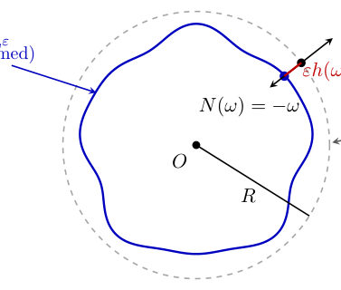
<figcaption class="paper-figure-caption"><b>Fig 1.</b> Figure 1: Schematic illustration of a small normal deformation of the hypersphere Sn R ⊂Rn+1. The undeformed hypersphere is represented by the dashed gray curve, while the deformed hypersphere Sn R,ε is shown by the solid blue curve. The vector ω denotes the outward unit radial direction, and the inward normal is therefore N(ω) = −ω. In this convention, the deformation is described by Xε(ω) = Rω −εh(ω)ω.</figcaption>
</figure>
</div>
<p><strong>Summary.</strong> This theoretical work investigates how the bound-state energy of a quantum particle interacting via a delta potential on a hypersphere changes when the sphere's surface is slightly deformed. The key finding is that, to first order, the energy shift depends only on the average displacement of the surface, suggesting that the system behaves as if it were on a perfectly round sphere with a slightly adjusted radius.</p>
<p><strong>Why it may be interesting.</strong> The result that the energy depends only on the average displacement $\langle h 
angle$ is a powerful statement about the robustness of the spectrum to non-uniform deformations, which is relevant for understanding effective Hamiltonians in curved or perturbed geometries.</p>
<details>
<summary>Detailed structure</summary>
<p><strong>Main problem.</strong> The paper analyzes the bound-state energy of a quantum system subjected to a rank-one delta interaction supported on a small normal deformation of an $n$-dimensional hypersphere.</p>
<p><strong>Main result.</strong> To first order in the deformation parameter $\epsilon$, the bound-state energy depends only on the average normal displacement $\langle h 
angle$, implying spectral equivalence to a round sphere with an effective radius $R - \epsilon \langle h 
angle$.</p>
<p><strong>Method.</strong> The analysis uses perturbation theory on the resolvent operator, expanding the matrix element of the free Green's function to first order in the deformation parameter $\epsilon$.</p>
<p><strong>Model / system.</strong> The system is modeled by a Hamiltonian $H = H_0 - \lambda |\delta S_{n,R,\epsilon}
angle\langle\delta S_{n,R,\epsilon}|$, where $H_0 = -\Delta$ and the interaction is a rank-one delta potential supported on the deformed hypersphere $S^n_{R,\epsilon}$.</p>
<p><strong>Key observables.</strong> Bound-state energy $E = -
u^2$, and the dependence of this energy on the average normal displacement $\langle h 
angle$.</p>
<p><strong>Important parameters / regimes.</strong> The small deformation parameter $\epsilon$, the dimensionality $n$, and the coupling constant $\lambda$.</p>
<p><strong>Assumptions / limitations.</strong> The analysis is restricted to the small deformation limit ($\epsilon \ll 1$) and the interaction is specifically the rank-one coupling associated with the normalized surface measure.</p>
<p><strong>Figures summary.</strong> Figure 1 schematically illustrates the difference between the undeformed and deformed hypersphere; other figures likely contain mathematical derivations or summary tables of the bound-state equations.</p>
<p><strong>Paper structure.</strong> The paper first establishes the bound-state equation for the undeformed sphere using Bessel functions. It then introduces the small deformation via $X_\epsilon(\omega)$ and calculates the first-order correction to the matrix element, leading to the main result regarding the dependence on $\langle h 
angle$.</p>
</details>
<details>
<summary>Abstract</summary>
<p>We study rank-one delta interactions supported by small normal deformations of an \(n\)-dimensional hypersphere \(S_R^n\subset\mathbb{R}^{n+1}\). The interaction is defined by the normalized surface measure on the support and therefore corresponds to the rotationally invariant sector of the hyperspherical shell problem. For the undeformed hypersphere, we derive the bound-state equation for \(E=-ν^2\) in terms of the modified Bessel product \[   I_{\frac{n-1}{2}}(νR)K_{\frac{n-1}{2}}(νR). \] We then consider an inward normal deformation \[   X_\varepsilon(ω)=(R-\varepsilon h(ω))ω,   \qquad ω\in S^n,   \qquad 0<\varepsilon\ll1. \] Our main result is that, to first order in \(\varepsilon\), the bound-state energy depends only on the average normal displacement \[   \langle h\rangle   =   \frac1{|S^n|}\int_{S^n}h(ω)\,dΩ_n(ω). \] Equivalently, the deformed hypersphere is spectrally equivalent, up to \(O(\varepsilon^2)\), to a round hypersphere with effective radius \(R-\varepsilon\langle h\rangle\). In particular, mean-zero deformations do not change the rank-one bound-state energy at first order.</p>
</details>
<p><sub><a href="#top">↑ back to top</a></sub></p>

<p><a id="paper-2608.24299"></a></p>
<h3 id="distributed-resource-theory-of-entanglement-and-magic"><a href="http://arxiv.org/abs/2608.24299v1">Distributed Resource Theory of Entanglement and Magic</a></h3>
<p><strong>Authors:</strong> Xiao Yuan, Wenhao Zhang, Qiming Ding, You Zhou<br>
<strong>Type:</strong> theory · <strong>Category:</strong> quantum information and computing · <strong>PDF:</strong> <a href="https://arxiv.org/pdf/2608.24299v1">https://arxiv.org/pdf/2608.24299v1</a><br>
<strong>Analysis basis:</strong> full PDF text, analyzed in chunks</p>
<div class="figure-strip-hint">↔ Scroll figures horizontally</div>
<div class="paper-figures-scroll">
<figure class="paper-figure-card">
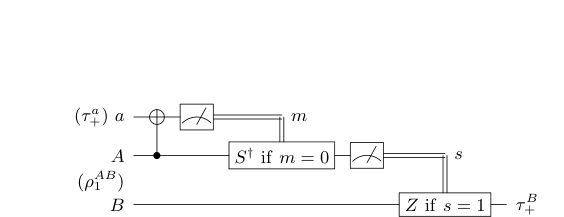
<figcaption class="paper-figure-caption"><b>Fig 1.</b> FIG. 1. Gate-level realization in time order. The Za mea- surement on system a produces m ∈{0, 1}; Alice’s final XA measurement on system A produces the hidden sign s ∈{0, 1}. Only s is sent to Bob.</figcaption>
</figure>
</div>
<p><strong>Summary.</strong> This paper introduces the Distributed Resource Theory of Entanglement and Magic (DREAM) to unify the study of entanglement and magic in quantum computing. It proves that DREAM captures resources beyond what is captured by considering entanglement and magic separately. The work reveals counterintuitive resource behaviors, such as teleporting magic states using only separable resources.</p>
<p><strong>Why it may be interesting.</strong> It establishes a powerful, unified mathematical framework for quantifying multiple, distinct quantum resources, which is highly relevant for designing fault-tolerant quantum computation protocols.</p>
<details>
<summary>Detailed structure</summary>
<p><strong>Main problem.</strong> To develop a unified resource-theoretic description (DREAM) for entanglement and magic in distributed fault-tolerant quantum computing, determining if resources beyond these two are necessary.</p>
<p><strong>Main result.</strong> DREAM is strictly richer than treating entanglement and magic independently, and a shared separable state can enable magic state teleportation without consuming entanglement.</p>
<p><strong>Method.</strong> The authors introduce the DREAM framework, defining free states based on local stabilizer circuits and analyzing resource flow using network flow analogies and robustness measures.</p>
<p><strong>Model / system.</strong> The study models quantum networks on a graph G=(V, E), involving local quantum systems, communication links, and resource states like magic states and general quantum states.</p>
<p><strong>Key observables.</strong> Entanglement, Magic, DREAM Resourcefulness, Teleportation Capability, Maximal Free Weight ($w_{FAB}$)</p>
<p><strong>Important parameters / regimes.</strong> The resource threshold $|t|$ for states $\Theta_{2k}(t)$ to be free under DREAM, and network capacities ($c_e, h_e$).</p>
<p><strong>Assumptions / limitations.</strong> The analysis relies on the properties of local stabilizer circuits and the reduction of resource allocation problems to max-flow min-cut theorems.</p>
<p><strong>Figures summary.</strong> Figure 1 illustrates the gate-level realization of the magic state teleportation protocol, and other figures relate resource flow to network cuts.</p>
<p><strong>Paper structure.</strong> The paper systematically introduces DREAM, proves its strict resource richness, demonstrates counterintuitive resource teleportation protocols, and extends the analysis to general quantum networks using network flow theorems.</p>
</details>
<details>
<summary>Abstract</summary>
<p>In distributed fault-tolerant quantum computing, entanglement and magic are essential resources for quantum communication and universal fault-tolerant computation, respectively. Although they are usually treated as distinct resource currencies, whether they admit a unified resource-theoretic description remains an open question. Here, we introduce the distributed resource theory of entanglement and magic (DREAM). In this framework, the free states are convex mixtures of product local stabilizer states, and the free operations are local stabilizer circuits assisted by classical communication (LSCC). We show that DREAM contains nontrivial resource states that are neither entanglement nor magic, so it is strictly richer than treating the two resources independently. Surprisingly, such resources can enable the teleportation of magic states between distant parties without consuming entanglement, revealing a counterintuitive form of resource teleportation mediated entirely by separable states. We further generalize this result to quantum networks and investigate general quantum-state teleportation under LSCC. We show that the shared resource under DREAM is closely related to the teleportation capability, quantified by the magic of the teleported state. Our work establish a systematic framework for studying distributed quantum resources and uncover intrinsic relations among distinct resources within a unified resource theory.</p>
</details>
<p><sub><a href="#top">↑ back to top</a></sub></p>

<p><a id="paper-2608.24655"></a></p>
<h3 id="efficient-precise-dft-calculations-of-nmr-shieldings-revisiting-the-finite-field-approach"><a href="http://arxiv.org/abs/2608.24655v1">Efficient, precise DFT calculations of NMR shieldings: Revisiting the finite field approach</a></h3>
<p><strong>Authors:</strong> Xiao Liu, Kaushik D. Nanda, Jiashu Liang, Martin Head-Gordon<br>
<strong>Type:</strong> theory · <strong>Category:</strong> numerical methods · <strong>PDF:</strong> <a href="https://arxiv.org/pdf/2608.24655v1">https://arxiv.org/pdf/2608.24655v1</a><br>
<strong>Analysis basis:</strong> full PDF text, analyzed in chunks</p>
<div class="figure-strip-hint">↔ Scroll figures horizontally</div>
<div class="paper-figures-scroll">
<figure class="paper-figure-card">
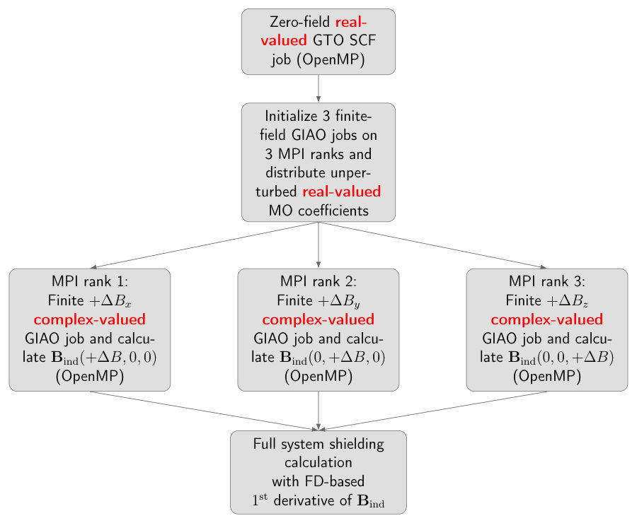
<figcaption class="paper-figure-caption"><b>Fig 1.</b> Figure 1: Hybrid MPI/OpenMP parallel algorithm for finite-field shielding calculations.</figcaption>
</figure>
<figure class="paper-figure-card">
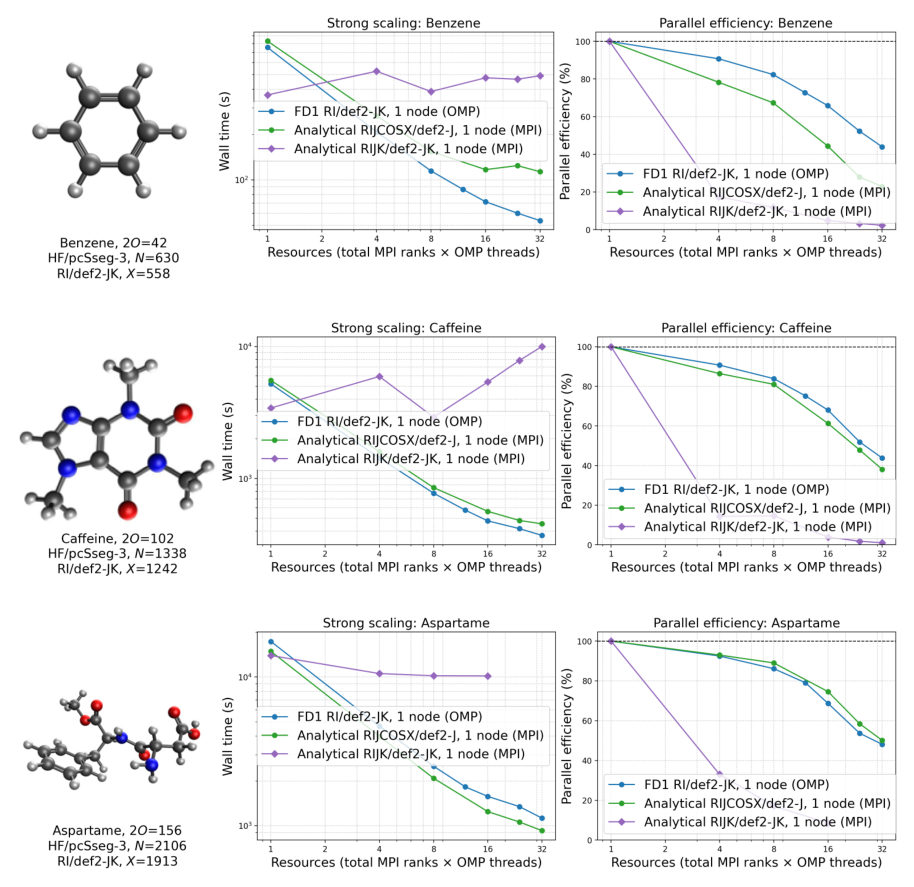
<figcaption class="paper-figure-caption"><b>Fig 2.</b> Figure 2: Single-node performance for the 3 smaller systems: benzene, caffeine, and aspar- tame. The number of electrons (2O), AOs (N) (with the pcSseg-3 basis set), and auxiliary basis functions (X) (with the def2-JK auxiliary basis set used in the FD1 calculations) are listed beside the strong scaling plots.</figcaption>
</figure>
<figure class="paper-figure-card">
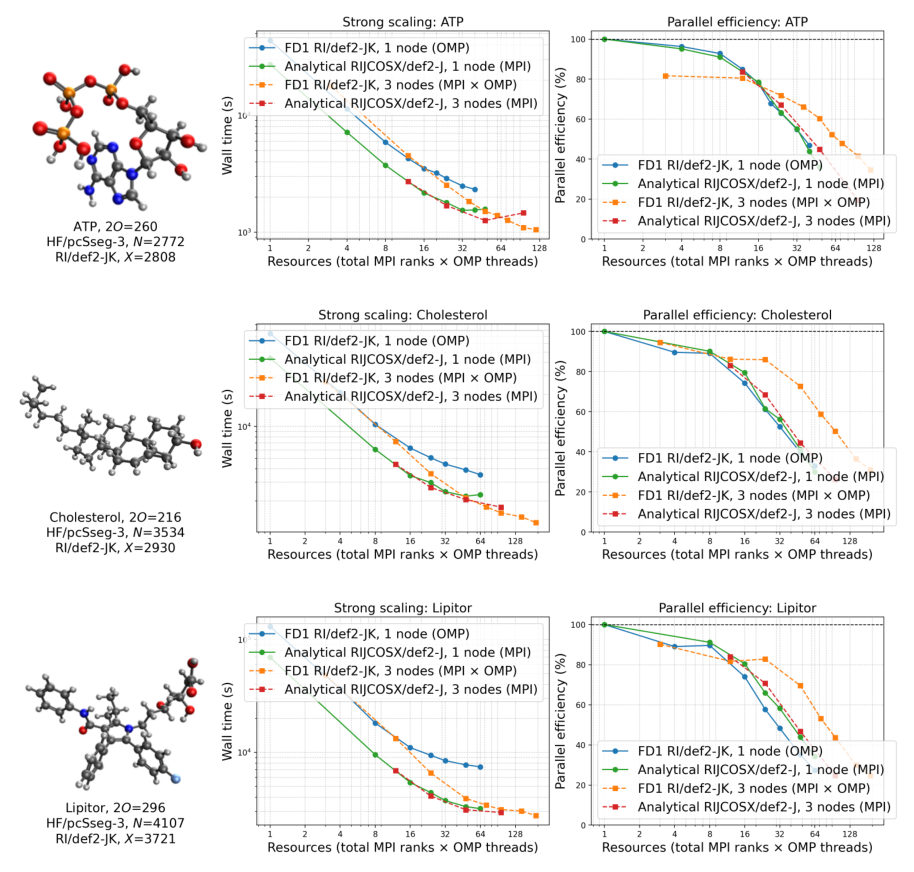
<figcaption class="paper-figure-caption"><b>Fig 3.</b> Figure 3: Multi-node performance for the 3 larger systems: ATP, cholesterol, and lipitor. The number of electrons (2O), AOs (N) (with the pcSseg-3 basis set), and auxiliary basis functions (X) (with the def2-JK auxiliary basis set used in the FD1 calculations) are listed beside the strong scaling plots.</figcaption>
</figure>
<figure class="paper-figure-card">
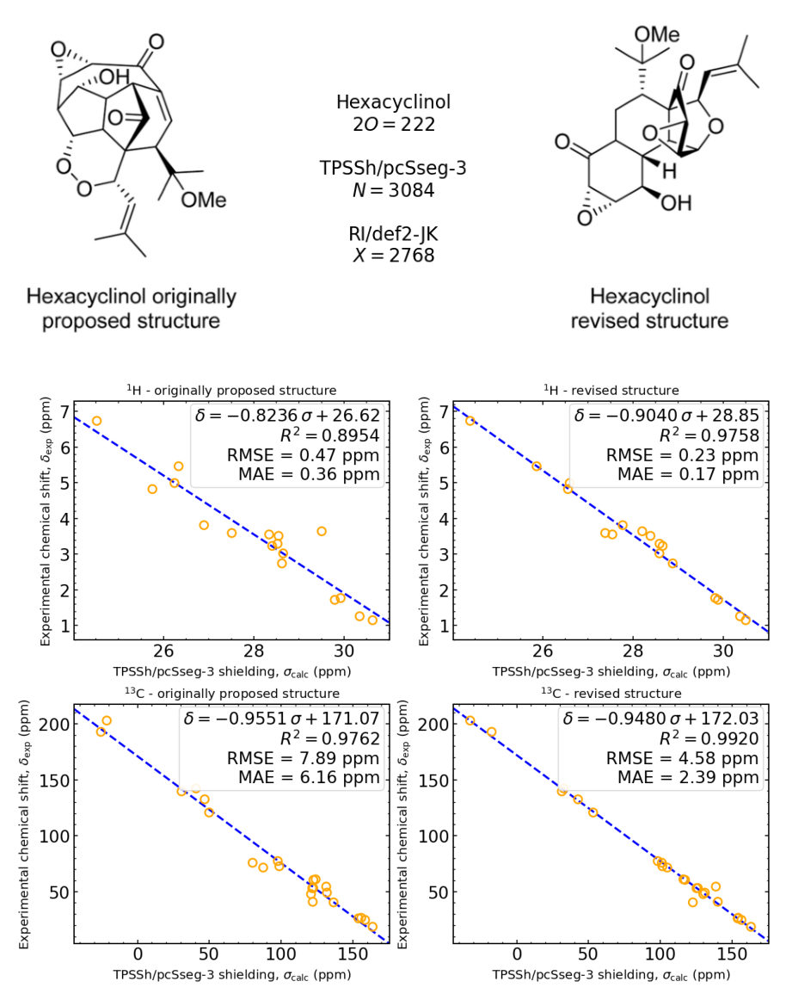
<figcaption class="paper-figure-caption"><b>Fig 4.</b> Figure 4: Linear fit based on TPSSh/pcSseg-3 calculations against hexacylinol experimental chemical shifts for 1H and 13C, with the originally proposed structure (top left) and the revised structure (top right) adapted from a recent review by de Albuquerque et al.112 under CC-BY 4.0 license</figcaption>
</figure>
</div>
<p><strong>Summary.</strong> This paper presents a scalable computational framework to calculate NMR shielding constants using Density Functional Theory. It overcomes the limitations of purely analytical or purely numerical methods by combining finite magnetic field differentiation with analytical first derivatives. The resulting hybrid algorithm is highly parallelizable and achieves high accuracy for complex chemical systems.</p>
<p><strong>Why it may be interesting.</strong> While focused on quantum chemistry, the development of a highly parallelized, mixed numerical/analytical algorithm for calculating response properties is a significant contribution to computational quantum mechanics methodology.</p>
<details>
<summary>Detailed structure</summary>
<p><strong>Main problem.</strong> The accurate and efficient calculation of NMR shielding tensors, which are second-derivative response properties crucial for interpreting NMR spectra.</p>
<p><strong>Main result.</strong> The proposed mixed finite-field/analytical differentiation scheme achieves very good computational efficiency for DFT-level NMR shielding, matching the precision of state-of-the-art analytic methods.</p>
<p><strong>Method.</strong> The authors developed a mixed numerical/analytical strategy, reformulating the second derivative as a finite first difference of a first derivative property, combined with RI approximation and hybrid MPI/OpenMP parallelization.</p>
<p><strong>Model / system.</strong> The calculations are performed for closed-shell chemical systems using Gauge-Including Atomic Orbitals (GIAOs) within the framework of Density Functional Theory (DFT).</p>
<p><strong>Key observables.</strong> Nuclear magnetic shielding tensor ($\sigma_{K}^{\alphaeta}$) and relative chemical shifts ($\delta$).</p>
<p><strong>Important parameters / regimes.</strong> The method's accuracy depends on the choice of step sizes for finite differencing and the quality of the RI approximation.</p>
<p><strong>Assumptions / limitations.</strong> The method is specifically tailored for closed-shell, time-reversal-symmetric systems, and the accuracy relies on the convergence of the finite difference scheme.</p>
<p><strong>Figures summary.</strong> The notes describe comparisons of error metrics (MSE, MAE, RMSE) across various computational settings and detailed scaling analyses of wall time using MPI/OpenMP resources.</p>
<p><strong>Paper structure.</strong> The paper introduces the physical problem, details the limitations of existing analytical and purely numerical methods, proposes the mixed finite-field approach, and validates its efficiency and accuracy through systematic comparisons.</p>
</details>
<details>
<summary>Abstract</summary>
<p>Absolute nuclear magnetic shielding constants and relative chemical shifts are second-derivative response properties that underpin the interpretation of Nuclear Magnetic Resonance (NMR) spectra and provide critical insights into the structural and electronic environments of diverse chemical systems. However, their accurate computation is often constrained by the need for method-specific, analytical response implementation, and therefore is particularly challenging for non-variational, correlated wavefunction methods where analytical second derivatives are frequently unavailable. Here we present a scalable framework that computes NMR shielding tensors through finite magnetic field differentiation of complex-valued, gauge-including atomic-orbital (GIAO) based self-consistent field (SCF) calculations. By combining hybrid MPI and OpenMP parallelization and resolution-of-identity (RI) approximation-based Coulomb (J) and Exchange (K) implementation and mixed numerical/analytical derivatives computational scheme, we achieve very good efficiency for hybrid density functional theory (DFT) NMR shielding, relative to existing state-of-the-art analytic implementations across realistic chemical systems of various sizes. Forward differentiation with optimal step sizes derived from rigorous error analysis retains favorable numerical errors much smaller than experimental uncertainty or intrinsic DFT errors. The results demonstrate that RI-accelerated finite magnetic field calculations can obtain DFT-level NMR shielding constants very precisely, providing a scalable foundation for extensions to more advanced quantum chemistry methods in future work.</p>
</details>
<p><sub><a href="#top">↑ back to top</a></sub></p>

<p><a id="paper-2608.24345"></a></p>
<h3 id="essentially-optimal-gate-teleportation"><a href="http://arxiv.org/abs/2608.24345v1">Essentially optimal gate teleportation</a></h3>
<p><strong>Authors:</strong> Lukas Schmitt, David Sutter<br>
<strong>Type:</strong> theory · <strong>Category:</strong> quantum information and computing · <strong>PDF:</strong> <a href="https://arxiv.org/pdf/2608.24345v1">https://arxiv.org/pdf/2608.24345v1</a><br>
<strong>Analysis basis:</strong> full PDF text, analyzed in chunks</p>
<div class="figure-strip-hint">↔ Scroll figures horizontally</div>
<div class="paper-figures-scroll">
<figure class="paper-figure-card">
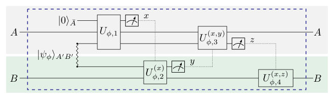
<figcaption class="paper-figure-caption"><b>Fig 1.</b> Figure 2: Gate teleportation protocol for the controlled-phase gate Uϕ = diag(1, 1, 1, eiϕ) with ϕ ∈[0, π] using the entangled resource state |ψϕ⟩A′B′. Systems A and B denote the input qubits. Dotted lines depict classical communication.</figcaption>
</figure>
<figure class="paper-figure-card">
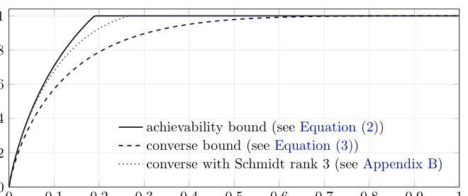
<figcaption class="paper-figure-caption"><b>Fig 2.</b> Figure 3: Entanglement entropy of the resource state for teleporting a controlled-phase gate Uϕ = diag(1, 1, 1, eiϕ) of angle ϕ ∈[0, π]. The achievability bound shows the specific teleportation protocol explained in Figure 2. Below the dashed converse bound (in black) no teleportation is possible. If we limit the Schmidt rank of the resource state to 3, a stronger converse bound holds (in dotted blue).</figcaption>
</figure>
<figure class="paper-figure-card">
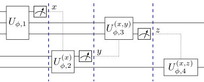
<figcaption class="paper-figure-caption"><b>Fig 3.</b> Figure 4: Teleportation circuit for Uϕ. To prove correctness we need to show that |Ω(x,y,z) 4 ⟩AB is proportional to Uϕ|Λ⟩AB for all x, z ∈{0, 1} and for all y ∈{0, 1, 2}.</figcaption>
</figure>
<figure class="paper-figure-card">
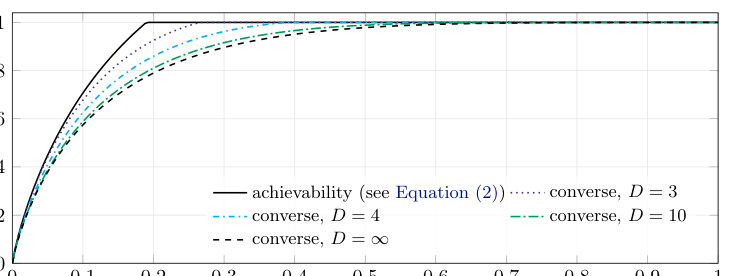
<figcaption class="paper-figure-caption"><b>Fig 4.</b> Figure 5: Entanglement of the resource state for teleporting a controlled-phase gate Uϕ = diag(1, 1, 1, eiϕ) of angle ϕ ∈[0, π]. The achievability curve corresponds to the protocol in Figure 2. The converse curves show Equation (133) for resource states of Schmidt rank D ∈{3, 4, 10, ∞}. For such a state, gate teleportation below the corresponding curve is impossible.</figcaption>
</figure>
</div>
<p><strong>Summary.</strong> This paper develops a highly optimized, deterministic protocol for teleporting the controlled-phase gate $U_\phi$ using minimal entanglement resources. By deriving tight upper and lower bounds on the required entanglement, the authors show that the resource cost scales near optimally with the gate parameter $\phi$. This work significantly improves the known resource scaling for implementing complex quantum gates like the QFT.</p>
<p><strong>Why it may be interesting.</strong> While focused on abstract quantum information theory, the rigorous bounding techniques using entropy and resource constraints are foundational to understanding the limits of quantum computation protocols, which has implications for designing efficient quantum hardware.</p>
<details>
<summary>Detailed structure</summary>
<p><strong>Main problem.</strong> The paper addresses the fundamental problem of implementing nonlocal unitary gates using only local operations, classical communication (LOCC), and a shared entangled resource state.</p>
<p><strong>Main result.</strong> They present a deterministic protocol for the controlled-phase gate $U_\phi$ whose entanglement consumption is shown to be close to the theoretical optimum for all phase angles $\phi$.</p>
<p><strong>Method.</strong> The authors derive both achievable upper bounds (via a specific protocol) and rigorous lower bounds (via entropy arguments and majorization criteria) on the required entanglement resource.</p>
<p><strong>Model / system.</strong> The core model is quantum gate teleportation, specifically analyzing the resource cost for implementing the two-qubit controlled-phase gate $U_\phi = 	ext{diag}(1, 1, 1, e^{i\phi})$. The analysis involves resource states $|\psi
angle_{A'B'}$ and the associated entanglement entropy.</p>
<p><strong>Key observables.</strong> Entanglement entropy (ebits), the entanglement cost $TC(U_\phi)$, and the required Schmidt rank of the resource state.</p>
<p><strong>Important parameters / regimes.</strong> The phase angle $\phi \in [0, \pi]$, and the resource state parameters defining the Schmidt decomposition.</p>
<p><strong>Assumptions / limitations.</strong> The analysis assumes deterministic and exact implementation of the unitary gate and relies on advanced mathematical tools like majorization criteria and determinant identities.</p>
<p><strong>Figures summary.</strong> Figures illustrate the general gate teleportation setup, the specific four-round protocol for $U_\phi$, and plots comparing the derived achievability bounds against the converse bounds across varying $\phi$.</p>
<p><strong>Paper structure.</strong> The paper builds from defining the general teleportation cost, presenting the specific protocol for $U_\phi$ (including its four rounds), deriving the necessary lower bounds using entropy arguments, and finally applying these results to improve the known cost for complex tasks like the Quantum Fourier Transform (QFT).</p>
</details>
<details>
<summary>Abstract</summary>
<p>Gate teleportation allows us to implement a nonlocal unitary using local operations, classical communication (LOCC), and a shared entangled state. Known deterministic teleportation protocols consume at least one full ebit and achieve optimal entanglement consumption only for Clifford gates. Here, we present a deterministic LOCC protocol for implementing the two-qubit controlled-phase gate $U_φ=\mathrm{diag}(1,1,1,e^{i φ})$ with $φ\in [0,π]$ whose entanglement consumption is close to optimal for every $φ$. In particular, vanishing rotation angles require vanishing entanglement.</p>
</details>
<p><sub><a href="#top">↑ back to top</a></sub></p>

<p><a id="paper-2608.23884"></a></p>
<h3 id="hartree-fock-coercivity-for-twisted-bilayer-graphene"><a href="http://arxiv.org/abs/2608.23884v1">Hartree--Fock coercivity for twisted bilayer graphene</a></h3>
<p><strong>Authors:</strong> Kevin D. Stubbs, Maciej Zworski<br>
<strong>Type:</strong> theory · <strong>Category:</strong> strongly correlated electrons · <strong>PDF:</strong> <a href="https://arxiv.org/pdf/2608.23884v1">https://arxiv.org/pdf/2608.23884v1</a><br>
<strong>Analysis basis:</strong> full PDF text, analyzed in chunks</p>
<div class="figure-strip-hint">↔ Scroll figures horizontally</div>
<div class="paper-figures-scroll">
<figure class="paper-figure-card">
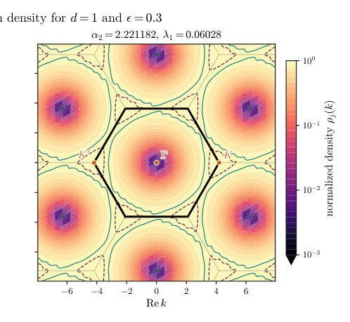
<figcaption class="paper-figure-caption"><b>Fig 1.</b> Figure 1. Numerically computed lowest eigenfunctions, ψ1 (with the eigen- values λ1 determining the constants in (1.2)) for the first two magic angles of [TKV19]: the plot shows the log of the normalised density, ρjpkq :“ |ψ1pkq|2{maxq |ψ1pqq|2, for αj, j “ 1, 2. The parameters in (1.1) are d “ 1 and ε “ 0.3. The vanishing at Γ “ 0 follows from basic symmetries. This figure and Figure 2 were produced, on request, by ChatGPT 5.6.</figcaption>
</figure>
<figure class="paper-figure-card">
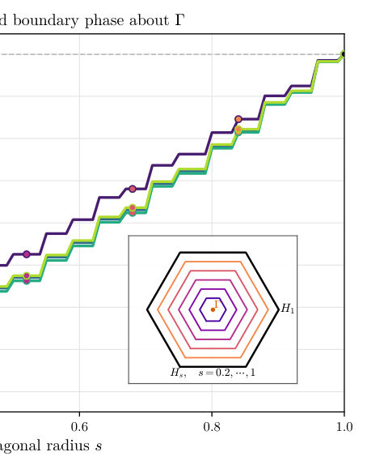
<figcaption class="paper-figure-caption"><b>Fig 2.</b> Figure 2. Curvature of the tangent line bundle at Π`, E´bE˚ ` (φ in (1.2) are essentially sections of it), equipped with its natural connection, for the first four positive magic parameters. Writing Hs “ sH1 where H1 is the fundamental hexagon centred at Γ, the solid curves show the curvature enclosed by Hs (divided by 2π), and the circles, the corresponding continuously lifted phase along BHs. Since c1pE´ bE˚ `q “ 2, all four profiles have the common endpoint 2. Their intermediate shapes do however depend visibly on α, with the first magic parameter being the most distinct.</figcaption>
</figure>
</div>
<p><strong>Summary.</strong> This paper rigorously analyzes the stability of correlated electron states in twisted bilayer graphene (TBG) using the Hartree-Fock approximation. It proves that the system's ground state is stable by demonstrating that the Hessian of the energy functional is strictly positive definite (coercive) at the expected minimizers. This mathematical result provides a deep theoretical underpinning for the insulating behavior observed in these correlated materials.</p>
<p><strong>Why it may be interesting.</strong> The rigorous mathematical proof of coercivity provides a strong stability criterion for the correlated electron state, which is crucial for understanding the insulating phases observed in magic-angle graphene.</p>
<details>
<summary>Detailed structure</summary>
<p><strong>Main problem.</strong> The study focuses on determining the stable ground states (minimizers) and proving the stability (coercivity) of the Hartree-Fock energy functional for flat bands in twisted bilayer graphene.</p>
<p><strong>Main result.</strong> The minimizers are proven to correspond exactly to filling one of the two component flat bands, and the Hessian of the functional at these points is shown to be strictly coercive, indicating stability.</p>
<p><strong>Method.</strong> The analysis employs advanced mathematical techniques involving the study of projection fields on Hilbert manifolds, utilizing topological invariants like Chern numbers to establish a positive lower bound on the Hessian.</p>
<p><strong>Model / system.</strong> The system is Twisted Bilayer Graphene (TBG) at magic angles, modeled using a continuous version of the Bistritzer–MacDonald Hamiltonian. The physics is governed by minimizing the Hartree-Fock energy functional derived by projecting electron-electron interactions onto the flat bands.</p>
<p><strong>Key observables.</strong> The primary observables are the minimizers of the Hartree-Fock functional ($\Pi = \Pi'$ or $\Pi = \Pi''$) and the coercivity constant ($c>0$) of the Hessian matrix.</p>
<p><strong>Important parameters / regimes.</strong> Magic angles ($\alpha$) where the energy gap closes, and the filling fraction (specifically half-filling of the flat band).</p>
<p><strong>Assumptions / limitations.</strong> The analysis assumes the existence of a simple magic angle and relies on mathematical techniques involving unitary trivializations and controlling variations in the projection fields.</p>
<p><strong>Figures summary.</strong> Figure 1 shows numerically computed lowest eigenfunctions for the first two magic angles. Figure 2 illustrates the curvature of the tangent line bundle at the minimizer $\Pi'$, showing enclosed curvature.</p>
<p><strong>Paper structure.</strong> The paper progresses by first defining the flat band structure and the Hartree-Fock functional, then proving that the minimizers must be projections onto the component bands ($\Pi'/\Pi''$), and finally establishing the strict coercivity of the Hessian at these minimizers.</p>
</details>
<details>
<summary>Abstract</summary>
<p>We study the minimisers of the Hartree--Fock functional for flat bands in the chiral model of twisted bilayer graphene introduced by Tarnopolsky, Kruchkov, and Vishwanath. Our model is a continuous version of the discrete model considered by Becker, Lin and Stubbs in previous works and the first result is a direct analogue of main theorems of those papers: at half filling of the flat band of multiplicity two, there are exactly two minimisers, obtained by occupying either one of the two sub-bands. (A more general version of this result, stressing its topological origins, was presented in Appendix A.8 of the Lecture Notes by Tao-Zworski.) The new contribution is the strict coercivity of the Hessian of the Hartree--Fock functional at the two minimisers. It is a consequence of the difference between the Chern numbers of the component bands and can be optimistically considered as a soft version of a ``spectral gap''.</p>
</details>
<p><sub><a href="#top">↑ back to top</a></sub></p>

<p><a id="paper-2608.24625"></a></p>
<h3 id="ideal-bose-einstein-condensation-in-the-canonical-ensemble-exact-asymptotic-estimates-from-large-deviations"><a href="http://arxiv.org/abs/2608.24625v1">Ideal Bose-Einstein condensation in the canonical ensemble: exact asymptotic estimates from large deviations</a></h3>
<p><strong>Authors:</strong> Giacomo Gradenigo, Dario Lucente, Luca Salasnich<br>
<strong>Type:</strong> theory · <strong>Category:</strong> statistical mechanics · <strong>PDF:</strong> <a href="https://arxiv.org/pdf/2608.24625v1">https://arxiv.org/pdf/2608.24625v1</a><br>
<strong>Analysis basis:</strong> full PDF text, analyzed in chunks</p>
<div class="figure-strip-hint">↔ Scroll figures horizontally</div>
<div class="paper-figures-scroll">
<figure class="paper-figure-card">
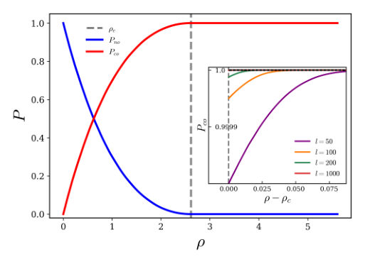
<figcaption class="paper-figure-caption"><b>Fig 1.</b> FIG. 1. Main: analytical result for probabilities of the nor- mal phase, pno(ϱ) = Zno(ϱ)/Z(ϱ), and of the condensed phase, pco(ϱ) = Zco(ϱ)/Z(ϱ), for the value ℓ= 1000, where Zno(ϱ) is the partition function of the normal phase, Zco(ϱ) is the partition function of the condensed phase and Z(ϱ) = Zno(ϱ) + Zco(ϱ) is the partition function of the total sys- tem. In the normal regime, ϱ &lt; ϱc, Zno(ϱ) and Zco(ϱ) are computed by means of the saddle-point approximation, see Eqns. (48),(49), while in the condensed regime, ϱ &gt; ϱc, the two partition functions are computed with our large-deviation approach for ℓ≫1, see Eqns. (73),(74). Inset: Zoom in the vicinity of ϱc of the parametric dependence on ℓof...</figcaption>
</figure>
<figure class="paper-figure-card">
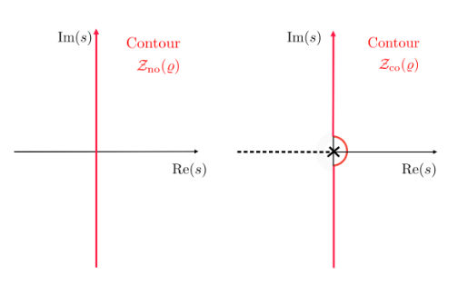
<figcaption class="paper-figure-caption"><b>Fig 2.</b> FIG. 2. In this figure are shown the Bromwich contours con- sidered in the condensed regime, ϱ &gt; ϱc, for the explicit calcu- lation of the canonical partition function of the normal phase, Zno(ϱ) (left), and for the calculation of the canonical partition function of the condensed phase, Zco(ϱ) (right). The split- ting of the total partition function in these two components, Z(ϱ) = Zno(ϱ)+Zco(ϱ), is always possible and is discussed at the beginning of Sec. III. Notice that, for ϱ &gt; ϱc, for the parti- tion function of the condensed phase Zco(ϱ) the contour must be wrapped around the branch cut ending at the origin with the condensate pole, see the expressions of Zco(ϱ) reported in Eqns....</figcaption>
</figure>
<figure class="paper-figure-card">
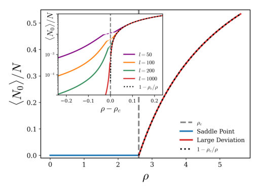
<figcaption class="paper-figure-caption"><b>Fig 3.</b> FIG. 3. Main: Canonical average of the condensate fraction ⟨n0(ϱ)⟩= ⟨N0(ϱ)⟩/N plotted as function of the dimensionless density ϱ = N/ℓ3, for the fixed value of the large parameter ℓ= 103. The blue horizontal continuous line is the analyt- ical result for ⟨n0(ϱ)⟩in the normal regime, ϱ &lt; ϱc, as ob- tained with the saddle-point method for large ℓ, see Eq. 86 in Sec. V B. The red continuous increasing line is ⟨n0(ϱ)⟩ in the condensed regime, ϱ &gt; ϱc, obtained with the large- deviations approach of this work and corresponding to the expression in Eq. (96) from Sec. V C. Still in the main frame, the black dotted line represents the asymptotic behaviour of ⟨n0(ϱ)⟩= 1 −ϱc/ϱ obtained from the...</figcaption>
</figure>
<figure class="paper-figure-card">
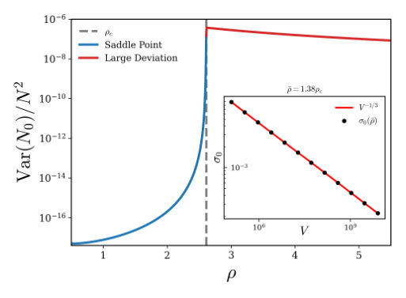
<figcaption class="paper-figure-caption"><b>Fig 4.</b> FIG. 4. Main: Canonical average for fluctuations of the con- densate fraction, σ0(ϱ) = p</figcaption>
</figure>
</div>
<p><strong>Summary.</strong> This work develops a large-deviations approach to calculate the canonical partition function for free bosons undergoing BEC. By analyzing the fixed-density ensemble, the authors obtain exact asymptotic estimates for key observables like the condensate fraction and its fluctuations in all regimes relative to the critical density. This method clarifies the mixed-order nature of the BEC transition and provides analytical tools applicable to other complex phase transitions.</p>
<p><strong>Why it may be interesting.</strong> The rigorous treatment of the canonical ensemble, especially resolving the first-order nature of the transition and providing fluctuation scaling laws, offers a powerful theoretical tool applicable to other mixed-order phase transitions.</p>
<details>
<summary>Detailed structure</summary>
<p><strong>Main problem.</strong> To derive exact asymptotic estimates for the canonical partition function of free bosons undergoing Bose-Einstein Condensation (BEC) using a large-deviations approach.</p>
<p><strong>Main result.</strong> The large-deviations method provides explicit, simple analytical expressions for the condensate fraction and its fluctuations in both the normal and condensed regimes, revealing the mixed-order nature of the transition.</p>
<p><strong>Method.</strong> The core method is applying large-deviations theory to the fixed-density (canonical) ensemble, involving complex contour integration and asymptotic analysis in the limit of large system size ($\ell 	o \infty$).</p>
<p><strong>Model / system.</strong> The system is an ideal, non-interacting gas of bosons confined in a three-dimensional box. The analysis focuses on the fixed-density ensemble, contrasting it with standard grand-canonical approaches.</p>
<p><strong>Key observables.</strong> Average condensate fraction $\langle n_0(\varrho) 
angle$, condensate fraction fluctuations $\sigma_0(\varrho)$, and the canonical partition function $Z(N)$.</p>
<p><strong>Important parameters / regimes.</strong> Dimensionless density $\varrho = 
ho \lambda_T^3$, the large-deviations parameter $\ell = L/\lambda_T$, and the critical density $\varrho_c$.</p>
<p><strong>Assumptions / limitations.</strong> The analysis is restricted to free bosons, and the method relies on asymptotic expansions in the large parameter $\ell$.</p>
<p><strong>Paper structure.</strong> The paper establishes the problem by contrasting the canonical and grand-canonical ensembles. It then develops the large-deviations framework, providing explicit calculations for the partition function and observables in both regimes ($\varrho < \varrho_c$ and $\varrho > \varrho_c$) using complex analysis techniques.</p>
</details>
<details>
<summary>Abstract</summary>
<p>In this work we present a large-deviations approach to the calculation of the canonical partition function for free bosons. Three-dimensional Bose-Einstein condensation is studied in the fixed-density ensemble as a function of the dimensionless density $\varrho = ρλ_T^3$, with $ρ=N/L^3$ the standard particle density, $λ_T$ the thermal wavelength, $L$ the linear size of the box and $N$ the total number of particles. A large-deviations approach in terms of the dimensionless parameter $\ell=L/λ_T$ allows us to provide exact asymptotic estimates of the canonical partition function both above and below the critical density $\varrho_c$ for Bose-Einstein condensation. We show how this approach allows to explicitly account for finite-size effects and how it fully captures the first-order aspects of the transition, allowing us to explicitate its driving mechanism in terms of the competing probabilities of normal and condensed phases. The proposed large-deviations approach allows then to obtain in all regimes explicit and simple analytical expressions, at the leading order in the large parameter $\ell$, for both the average fraction of particles in the ground state, the condensate fraction $\langle n_0(\varrho) \rangle = \langle N_0(\varrho) \rangle/N$, and for its fluctuations, $σ_0(\varrho) = \sqrt{\langle N_0^2(\varrho)\rangle - \langle N_0(\varrho)\rangle^2}/N$, retrieving for instance the anomalous scaling $σ_0(\varrho)\sim 1/V^{1/3}$ in the condensed regime, $\varrho > \varrho_c$. Our large-deviations asymptotic estimate, by analytically clarifying the mixed-order nature of Bose-Einstein condensation, allows then to reveal the similarity between this transition and other mixed-order transitions, as for instance the localization transition in the Discrete Non-Linear Schrödinger Equation.</p>
</details>
<p><sub><a href="#top">↑ back to top</a></sub></p>

<p><a id="paper-2608.24000"></a></p>
<h3 id="improved-quantum-codes-with-transversal-t-gates"><a href="http://arxiv.org/abs/2608.24000v1">Improved Quantum Codes with Transversal T Gates</a></h3>
<p><strong>Authors:</strong> Adam Wills<br>
<strong>Type:</strong> theory · <strong>Category:</strong> quantum information and computing · <strong>PDF:</strong> <a href="https://arxiv.org/pdf/2608.24000v1">https://arxiv.org/pdf/2608.24000v1</a><br>
<strong>Analysis basis:</strong> full PDF text, analyzed in chunks</p>
<div class="figure-strip-hint">↔ Scroll figures horizontally</div>
<div class="paper-figures-scroll">
<figure class="paper-figure-card">
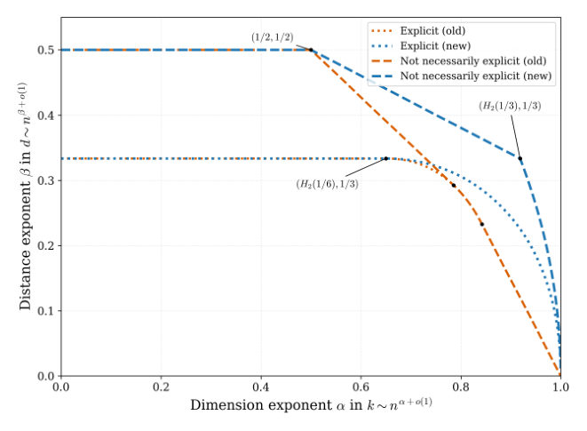
<figcaption class="paper-figure-caption"><b>Fig 1.</b> Figure 1: The boundary of the achievable dimension and distance exponents (α, β) in the polynomial rate and distance regime k = Ω  nα+o(1) , d = Ω  nβ+o(1) , for quantum CSS codes with transversal T gates. We show both explicit constructions, and not necessarily explicit constructions, both new in this work, and previously known. We give the exact formulae for the boundaries of explicitly achievable exponents β(α), both new and existing, in Theorem 1 and Remark 1.5, and for not necessarily explicit families in Theorem 4 and Remark 1.6, respectively.</figcaption>
</figure>
<figure class="paper-figure-card">
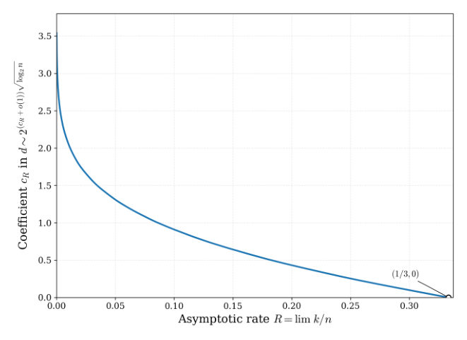
<figcaption class="paper-figure-caption"><b>Fig 2.</b> Figure 2: The boundary of the achievable asymptotic parameters in the constant-rate regime. For a given constant rate R ∈(0, 1/3), we plot cR, where the achievable distance scaling is the growing sub-polynomial</figcaption>
</figure>
</div>
<p><strong>Summary.</strong> This paper advances the theory of quantum error-correcting codes by improving the achievable parameters for codes supporting transversal T gates. Using advanced algebraic constructions based on punctured monomial codes, the authors achieve constant rate and growing distance for the first time in this context. This work significantly pushes the theoretical boundaries for building scalable, fault-tolerant quantum computers.</p>
<p><strong>Why it may be interesting.</strong> While focused on abstract coding theory, the results provide concrete, improved bounds on the resource overheads (like distillation exponents) required for fault-tolerant quantum computation, which is a major theoretical bottleneck in quantum information science.</p>
<details>
<summary>Detailed structure</summary>
<p><strong>Main problem.</strong> The primary goal is to improve the achievable parameters (rate and distance) of quantum error-correcting codes that support transversal T gates, which is crucial for fault-tolerant quantum computation.</p>
<p><strong>Main result.</strong> The authors significantly broaden the achievable parameters by constructing codes that achieve constant rate and growing distance for the first time in this setting, and achieving $\gamma 	o 0$ for the overhead exponent.</p>
<p><strong>Method.</strong> The work develops a theoretical framework using divisible decreasing monomial codes punctured at specific sets on the Boolean hypercube, and applies this to weighted Reed-Muller codes and randomized constructions.</p>
<p><strong>Model / system.</strong> The study focuses on quantum CSS codes, specifically analyzing the constraints imposed by requiring a transversal T gate application across all physical qubits to yield the logical T gate.</p>
<p><strong>Key observables.</strong> Achievable code parameters, including rate ($\alpha$), distance exponent ($eta$), and the overhead exponent ($\gamma$) for magic state distillation.</p>
<p><strong>Important parameters / regimes.</strong> The regime of polynomial rate/distance, and the constant rate/growing distance regime, particularly for $R \in (0, 1/3)$.</p>
<p><strong>Assumptions / limitations.</strong> The analysis is primarily restricted to stabilizer codes, although the authors suggest potential extensions beyond this class.</p>
<p><strong>Figures summary.</strong> Figure 1 compares the boundaries of achievable dimension and distance exponents $(\alpha, eta)$ for explicit versus non-explicit constructions. Figure 2 plots the boundary in the constant-rate regime.</p>
<p><strong>Paper structure.</strong> The paper first establishes the theoretical framework using punctured decreasing monomial codes, derives a closed-form distance expression, and then instantiates this with explicit constructions (like weighted Reed-Muller codes) and randomized methods to prove improved asymptotic bounds.</p>
</details>
<details>
<summary>Abstract</summary>
<p>In this work, we study quantum CSS codes with transversal $T$ gates. Here, $T$ gate transversality is meant in the strongest sense; the application of physical $T$ to every physical qubit yields logical $T$ on every logical qubit, without Clifford corrections. Despite the importance of the $T$ gate in fault-tolerant quantum computation, the parameters of asymptotic families of such codes have not been improved since the work of Hastings and Haah in 2017, and Haah in 2018. In this work, we significantly broaden the achievable parameters of quantum code families with transversal $T$ gates, both expanding the regime of achievable polynomial rate and distance, and constructing such codes with constant rate and growing distance; this is the first time the latter has been achieved, even when allowing Clifford corrections after the transversal $T$ gate. These are also the first codes achieving $γ\to 0$ for a code with a transversal $T$ gate, where $γ$ is the overhead exponent of magic state distillation.   To do this, we develop a framework of divisible decreasing monomial codes, punctured at a downward-closed set on the Boolean hypercube to create logical qubits. We prove a closed-form expression for the distance of such a code punctured at such a set, which may be of independent interest. We first instantiate this with an explicit construction based on weighted Reed-Muller codes, puncturing at low Hamming-weight points, and then with a randomised construction, where a small random set of points is protected from the puncturing to save quantum code distance, achieving improved parameters.</p>
</details>
<p><sub><a href="#top">↑ back to top</a></sub></p>

<p><a id="paper-2608.23675"></a></p>
<h3 id="large-scale-theoretical-investigation-of-the-phase-diagram-of-twisted-bilayer-motemath872math-at-fractional-fillings-agreements-and-contradictions-with-current-experiments"><a href="http://arxiv.org/abs/2608.23675v1">Large scale theoretical investigation of the phase diagram of twisted bilayer MoTe$_2$ at fractional fillings: agreements and contradictions with current experiments</a></h3>
<p><strong>Authors:</strong> Heqiu Li, Jiabin Yu, Xiaodong Xu, B. Andrei Bernevig, N. Regnault<br>
<strong>Type:</strong> theory · <strong>Category:</strong> strongly correlated electrons · <strong>PDF:</strong> <a href="https://arxiv.org/pdf/2608.23675v1">https://arxiv.org/pdf/2608.23675v1</a><br>
<strong>Analysis basis:</strong> full PDF text, analyzed in chunks</p>
<div class="figure-strip-hint">↔ Scroll figures horizontally</div>
<div class="paper-figures-scroll">
<figure class="paper-figure-card">
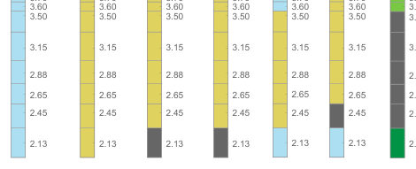
<figcaption class="paper-figure-caption"><b>Fig 1.</b> FIG. 1. Phase diagrams of ground states for various twist angles and filling fractions at interaction strength 10/ϵ = 0.9. The ground states are obtained from 2BPV calcu- lations in 21-site system for ν = −2/3, −4/7, −3/7, −1/3 and 20-site system for ν = −3/5, −2/5. The fillings ν = −2/3, −3/5, −4/7, −3/7 are calculated in the sector with full spin polarization, and the calculations in ν = −2/5, −1/3 in- clude sectors with and without full spin polarization (more details can be found in Sec. IV C). The ν = −4/3 filling is obtained from 2BPV calculation with all spin sectors in 3 × 3 system. The light green region with partially polarized CDW refers to the case where the ground state of...</figcaption>
</figure>
<figure class="paper-figure-card">
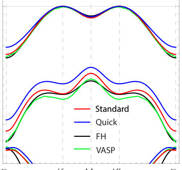
<figcaption class="paper-figure-caption"><b>Fig 2.</b> FIG. 2. Band structures at 3.89◦of VASP (green) and the continuum model with FH parameters (black), the DFT no-fitting model in the standard basis (red) and quick basis (blue).</figcaption>
</figure>
<figure class="paper-figure-card">
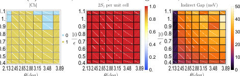
<figcaption class="paper-figure-caption"><b>Fig 3.</b> FIG. 3. Hartree-Fock results at ν = −1 for (a) FH model and (b) no-fitting model standard basis in 18 × 18 system. Here |Ch| labels the absolute value of the Chern number of the ground states (left panel), 2Sz is twice of the spin in unit of ℏ(middle panel), and the indirect gap refers to the indirect gap of the HF band structure (right panel).</figcaption>
</figure>
<figure class="paper-figure-card">
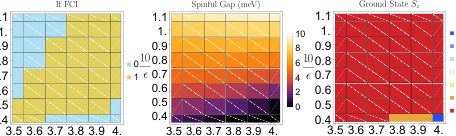
<figcaption class="paper-figure-caption"><b>Fig 4.</b> FIG. 5. 1BPV ED results at ν = −1/3, −2/3, −4/3 for the FH model in a 9 × 2 system. The meaning of the labels can be found in the caption of Fig. 4.</figcaption>
</figure>
<figure class="paper-figure-card">
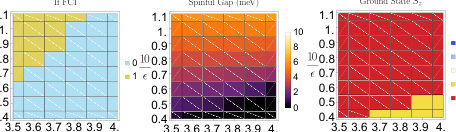
<figcaption class="paper-figure-caption"><b>Fig 5.</b> FIG. 4. 1BPV ED results at ν = −1/3, −2/3, −4/3 for the FH model on a 3 × 4 grid. Here the calculations are all done on a momentum mesh of the form in Eq. (7) with Nx, Ny, en11, en12, en21 and en22 specified in the figure, and FCI momenta are shown in (kx, ky) format. “Range of Sz available” refers to the range of Sz included in the calculation, and the spin Sz is in the unit of ℏ. In the left panels, 1 means the system is in an FCI phase according to Prop. 1, while 0 means otherwise. In the middle panels, the spinful gap is shown as zero if its actual value becomes negative.</figcaption>
</figure>
</div>
<p><strong>Summary.</strong> This paper performs an exact diagonalization study on twisted bilayer MoTe2 to map its interaction-driven phase diagram. By comparing one-band and two-band models, the authors confirm that multi-band physics is essential for accurately predicting the stability of Fractional Chern Insulators and identifying competing ground states like CDWs. The work establishes a critical theoretical benchmark for correlated topological matter in TMDs.</p>
<p><strong>Why it may be interesting.</strong> The detailed comparison between 1BPV and 2BPV models, which directly addresses the necessity of including band mixing effects, provides a rigorous theoretical benchmark for understanding correlated topological phases in 2D materials.</p>
<details>
<summary>Detailed structure</summary>
<p><strong>Main problem.</strong> To provide a comprehensive theoretical study of interaction-driven phases, particularly Fractional Chern Insulators (FCIs) and competing phases, in twisted bilayer MoTe2.</p>
<p><strong>Main result.</strong> The 2BPV calculation successfully reproduces the experimentally observed hierarchy of FCIs at specific fillings, while showing that multi-band physics is crucial for accurate comparison with experiments.</p>
<p><strong>Method.</strong> The study employs exact diagonalization (ED) studies on continuum-model moiré bands, comparing one-band-per-valley (1BPV) and two-band-per-valley (2BPV) projections.</p>
<p><strong>Model / system.</strong> The physical system is twisted bilayer MoTe2 across experimentally relevant twist angles (2.13°–4°). The theoretical framework involves continuum-model moiré bands, comparing 1BPV and 2BPV calculations, and benchmarking against DFT-derived models.</p>
<p><strong>Key observables.</strong> Existence and stability of FCIs, competition between FCI and Charge Density Wave (CDW) ground states, and signatures of Composite Fermi Liquid (CFL) physics.</p>
<p><strong>Important parameters / regimes.</strong> Twist angles ($ heta$): $2.13^\circ$ to $4^\circ$; Fillings ($
u$): Odd-denominator fillings (e.g., $-2/3, -3/5, -4/7$) and half filling ($
u = -1/2$).</p>
<p><strong>Assumptions / limitations.</strong> The study establishes a unified numerical benchmark, emphasizing that multi-band physics (2BPV) is essential for quantitative comparison with experiments, as 1BPV can overestimate stability.</p>
<p><strong>Figures summary.</strong> Figure 1 shows phase diagrams of ground states for various twist angles and fillings derived from 2BPV calculations.</p>
<p><strong>Paper structure.</strong> The paper systematically compares different theoretical models (1BPV vs 2BPV) across various fillings and twist angles to map out the phase diagram, focusing on reproducing known experimental features.</p>
</details>
<details>
<summary>Abstract</summary>
<p>We present a comprehensive exact-diagonalization study of interaction-driven phases in twisted bilayer MoTe$_2$ across experimentally relevant twist angles ($2.13^\circ$--$4^\circ$) and hole fillings. Using continuum-model moiré bands, we compare the one-band-per-valley (1BPV) projection with a two-band-per-valley (2BPV) calculation that includes interaction-driven band mixing, and we benchmark both the widely used first-harmonic continuum model and a parameter-free DFT ``fitting-free'' model. At odd-denominator fillings, the 2BPV calculation reproduces the experimentally observed hierarchy of fractional Chern insulators (FCIs) around $θ\approx 3.7^\circ$, including robust incompressible states at $ν=-2/3$, $-3/5$, and $-4/7$ while correctly finding the absence of an FCI at $ν=-3/7$, and it favors a charge density wave ground state at $ν=-1/3$ over the FCI. At half filling $ν=-1/2$, the 1BPV calculation exhibits clear composite Fermi liquid (CFL) signatures, whereas the band mixing in 2BPV calculations destabilizes the CFL ground state. Finally, motivated by the Landau-level analogy at $θ\approx 2.13^\circ$, we test the proposed non-abelian Pfaffian state at $ν=-3/2$ in the fully-polarized spin sector but find no evidence for this state within the models and parameters studied. Our results establish a unified numerical benchmark for correlated and topological phases in twisted bilayer MoTe$_2$ and clarify where multi-band physics is essential for a quantitative comparison with experiments.</p>
</details>
<p><sub><a href="#top">↑ back to top</a></sub></p>

<p><a id="paper-2608.24799"></a></p>
<h3 id="masked-differential-linear-distinguishers-and-quantum-approaches"><a href="http://arxiv.org/abs/2608.24799v1">Masked Differential-linear Distinguishers and Quantum Approaches</a></h3>
<p><strong>Authors:</strong> Shobhit Pandey, Sarbani Sen, Debajyoti Bera, Ravi Anand<br>
<strong>Type:</strong> theory · <strong>Category:</strong> other · <strong>PDF:</strong> <a href="https://arxiv.org/pdf/2608.24799v1">https://arxiv.org/pdf/2608.24799v1</a><br>
<strong>Analysis basis:</strong> full PDF text, analyzed in chunks</p>
<div class="figure-strip-hint">↔ Scroll figures horizontally</div>
<div class="paper-figures-scroll">
<figure class="paper-figure-card">
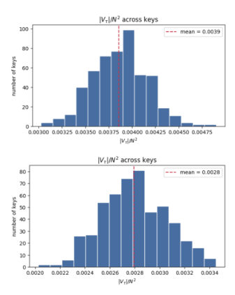
<figcaption class="paper-figure-caption"><b>Fig 1.</b> Fig. 1. Distribution of the number of keys against the number of good mask pairs in 16-bit mini-AES, averaged over all keys. A total of 512 keys were randomly selected, sufficient number of mask pairs were sampled and the proportion of good pairs esti- mated to 0.95 confidence (using Wilson score). τ was set to 9/216. The values of w that were chosen were 0x0003 (top-left), 0x3009 (top-right), 0x0845 (bottom-left), 0x2504 (bottom-right).</figcaption>
</figure>
<figure class="paper-figure-card">
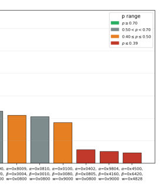
<figcaption class="paper-figure-caption"><b>Fig 2.</b> Fig. 2. Variation in the values of MAC of sample (α, β, w) triplets across 50 random keys for 16-bit mini-AES. The root-mean-square (RMS) of the MAC values, across all keys, and with 95% confidence (Wilson’s score), are shown for all triplets.</figcaption>
</figure>
<figure class="paper-figure-card">
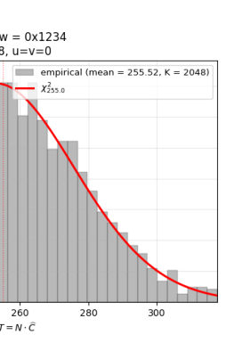
<figcaption class="paper-figure-caption"><b>Fig 3.</b> Fig. 3. Distribution of capacity for 16-bit random permutations follow χ2(255) for an 8-dimensional vector space of mask pairs; u, v denotes the dimensions of zero-masks which were not used in this experiment. X-axis indicates capacity (scaled by N) and density indicate the probability density function.</figcaption>
</figure>
<figure class="paper-figure-card">
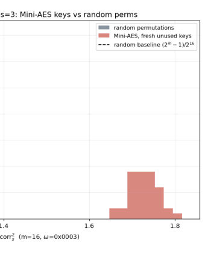
<figcaption class="paper-figure-caption"><b>Fig 4.</b> Fig. 4. Distributions of keys that are vulnerable to capacity based attack. The 16- dimensional multidimensional approximation was chosen earlier by identifying good mask pairs across a set of randomly chosen keys. A fresh set of 40 keys was used for this experiment to prevent any bias arising from using the same keys for attacking as that for identifying the masks. X-axis shows the capacity.</figcaption>
</figure>
<figure class="paper-figure-card">
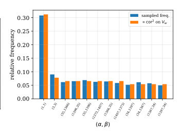
<figcaption class="paper-figure-caption"><b>Fig 5.</b> Fig. 6. Simulated quantum MACSam- ple conditioned on the heavy set Vw.</figcaption>
</figure>
</div>
<p><strong>Summary.</strong> This paper introduces Masked Differential-linear (MDL) approximations for cryptanalysis, centered on the Masked Auto-correlation (MAC) primitive. It presents a quantum algorithm to efficiently find powerful distinguishing mask pairs, simultaneously proving a super-polynomial classical lower bound for this task. This work establishes a quantum necessity result for identifying strong statistical correlations in cryptographic systems.</p>
<p><strong>Why it may be interesting.</strong> While focused on cryptography, the rigorous development of quantum lower bounds and the explicit comparison between quantum and classical computational complexity for a core mathematical problem (finding high-correlation structures) is highly relevant to quantum information theory.</p>
<details>
<summary>Detailed structure</summary>
<p><strong>Main problem.</strong> The paper develops a new framework, Masked Differential-linear (MDL) approximations, to cryptanalyze symmetric-key primitives by finding powerful statistical correlations.</p>
<p><strong>Main result.</strong> It establishes the first result pairing a quantum upper bound with a classical lower bound for identifying high-correlation approximations, proving that quantum algorithms are necessary for this task.</p>
<p><strong>Method.</strong> The authors introduce Masked Auto-correlation (MAC) and use quantum algorithms (constant-query sampling) to find mask pairs with high cross-correlation, contrasting this with a proven classical lower bound.</p>
<p><strong>Model / system.</strong> The analysis is applied to the cryptanalysis of symmetric-key primitives, such as block ciphers (Mini-AES) and stream ciphers, using the permutation function $f$ as the core model.</p>
<p><strong>Key observables.</strong> Masked cross-correlation $C_w^f(\alpha, eta)$, capacity of the masked auto-correlation space, and the signed score $    ext{Score}(k)$ for key recovery.</p>
<p><strong>Important parameters / regimes.</strong> The query complexity bounds ($\Omega(N/\log N)$ classically) and the quantum speed-up factor (quadratic speed-up via amplitude estimation).</p>
<p><strong>Assumptions / limitations.</strong> The core assumption is that the quantum upper bound and classical lower bound establish an absolute necessity for quantum computation in this specific cryptanalytic task.</p>
<p><strong>Figures summary.</strong> Figures compare the energy profile versus the sharply peaked signed score for key recovery, and show the success of the distinguishing capacity against random permutations.</p>
<p><strong>Paper structure.</strong> The paper introduces MAC and MDL approximations, presents the quantum sampling algorithm and the classical lower bound (MAC Fishing), and then applies this pipeline to demonstrate both distinguishing and key-recovery attacks on Mini-AES and a Simon cipher.</p>
</details>
<details>
<summary>Abstract</summary>
<p>We introduce masked auto-correlation, a new primitive for the cryptanalysis of symmetric-key primitives, together with a quantum attack pipeline built on it. For a permutation $f$, output masks $α,β$, and an input difference $w$, masked auto-correlation (MAC) measures the correlation between the masked outputs $α\cdot f(x)$ and $β\cdot f(x\oplus w)$. The associated masked differential-linear (MDL) approximations strictly generalize several classical techniques; ordinary linear cryptanalysis, differential-linear cryptanalysis, and the differential-linear connectivity table all arise as special cases. Our central object of study is the problem of finding mask pairs with large masked cross-correlation -- those that yield powerful distinguishers -- which we call MAC Fishing. We give a constant-query quantum algorithm that samples such pairs according to their squared correlation, and we prove an exponential classical lower bound of $Ω(N/\log N)$ queries, by adapting the hardness of Fourier Fishing. To our knowledge this is the first result pairing a quantum upper bound with a classical lower bound for the core task of identifying high-correlation approximations, making quantum algorithms an absolute necessity. Building on this, we analyse the distribution of masked auto-correlation for random permutations, and then construct capacity-based distinguishers and key-recovery attacks, both classically and with a quadratic quantum speed-up using amplitude estimation. We validate our claims with experiments on reduced-round mini-AES.</p>
</details>
<p><sub><a href="#top">↑ back to top</a></sub></p>

<p><a id="paper-2608.24648"></a></p>
<h3 id="non-subhomogeneity-of-minimal-operator-systems-over-positive-semidefinite-and-lorentz-cones"><a href="http://arxiv.org/abs/2608.24648v1">Non-Subhomogeneity of Minimal Operator Systems over Positive Semidefinite and Lorentz Cones</a></h3>
<p><strong>Authors:</strong> Tim Netzer<br>
<strong>Type:</strong> theory · <strong>Category:</strong> other · <strong>PDF:</strong> <a href="https://arxiv.org/pdf/2608.24648v1">https://arxiv.org/pdf/2608.24648v1</a><br>
<strong>Analysis basis:</strong> full PDF text, analyzed in chunks</p>
<div class="figure-strip-hint">↔ Scroll figures horizontally</div>
<div class="paper-figures-scroll">
<figure class="paper-figure-card">
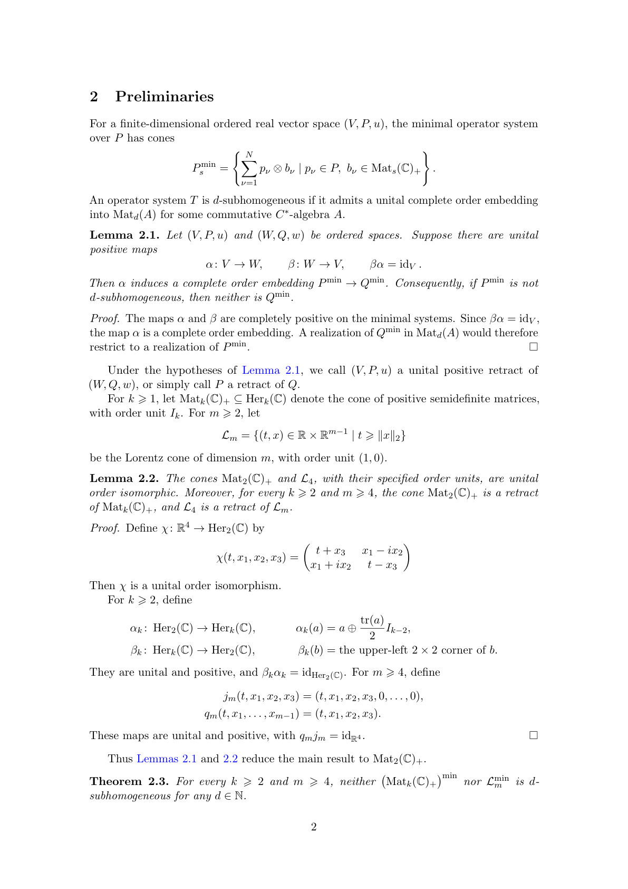
<figcaption class="paper-figure-caption"><b>Fig 1.</b> Low-resolution page preview, page 2</figcaption>
</figure>
<figure class="paper-figure-card">
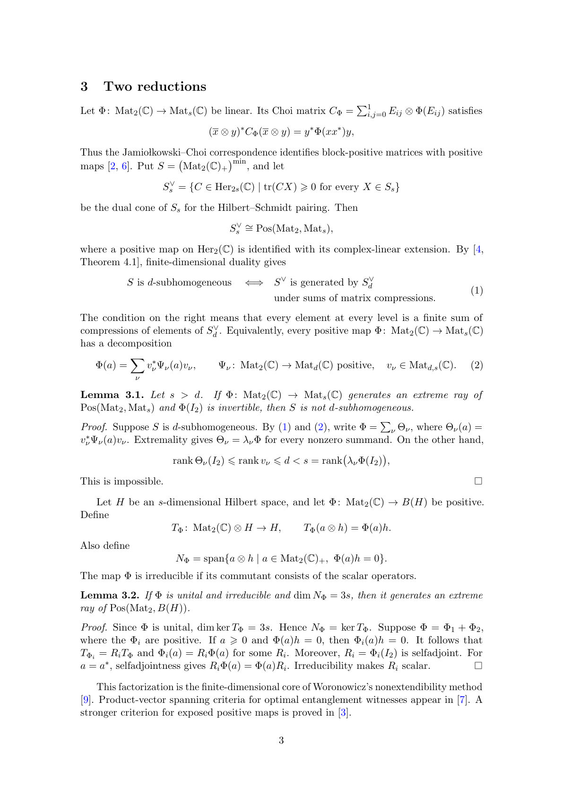
<figcaption class="paper-figure-caption"><b>Fig 2.</b> Low-resolution page preview, page 3</figcaption>
</figure>
<figure class="paper-figure-card">
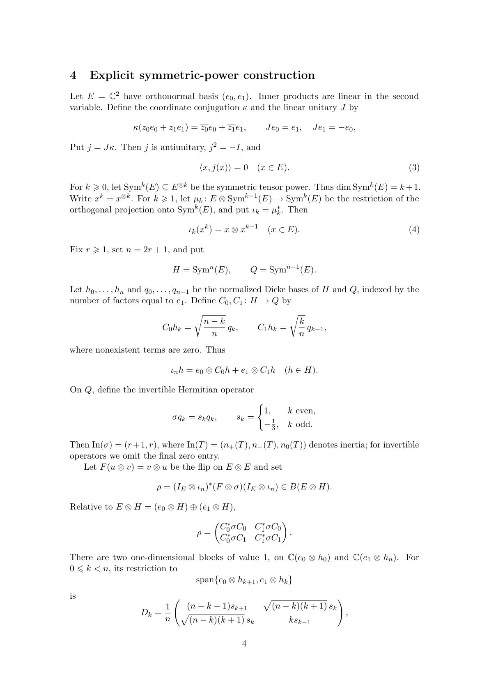
<figcaption class="paper-figure-caption"><b>Fig 3.</b> Low-resolution page preview, page 4</figcaption>
</figure>
<figure class="paper-figure-card">
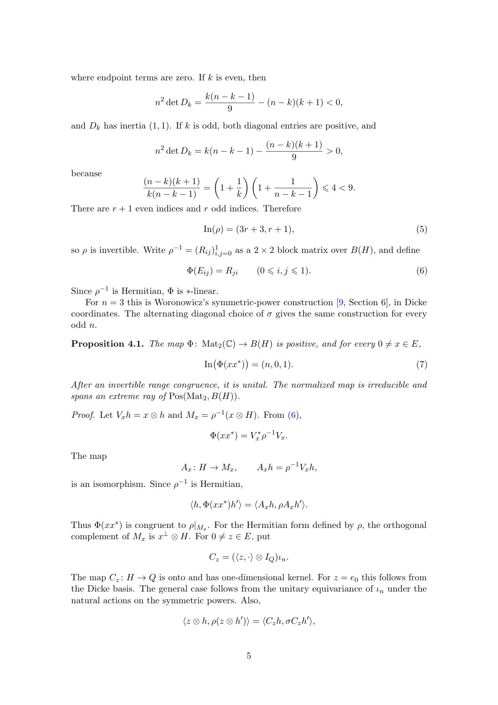
<figcaption class="paper-figure-caption"><b>Fig 4.</b> Low-resolution page preview, page 5</figcaption>
</figure>
<figure class="paper-figure-card">
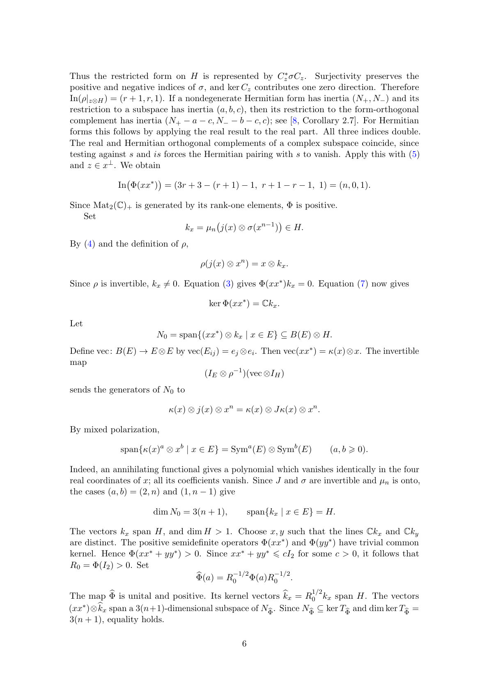
<figcaption class="paper-figure-caption"><b>Fig 5.</b> Low-resolution page preview, page 6</figcaption>
</figure>
</div>
<p><strong>Summary.</strong> This theoretical paper proves that the minimal operator systems associated with matrix positive semidefinite cones and Lorentz cones are not subhomogeneous. The authors achieve this by constructing specific positive maps whose properties violate the necessary conditions for subhomogeneity. This result has deep implications for understanding the structural complexity of quantum correlation measures.</p>
<p><strong>Why it may be interesting.</strong> While highly abstract, the techniques involving operator systems, positive maps, and non-subhomogeneity are foundational in the mathematical physics of quantum correlations and entanglement structure, which underpins many quantum information theories.</p>
<details>
<summary>Detailed structure</summary>
<p><strong>Main problem.</strong> The paper aims to prove that the minimal operator systems associated with the complex positive semidefinite cone ($   ext{Mat}<em>k(\mathbb{C})</em>+$) and the Lorentz cones ($\mathcal{L}_m$) are not subhomogeneous.</p>
<p><strong>Main result.</strong> The minimal operator systems over $    ext{Mat}<em>k(\mathbb{C})</em>+$ ($k \ge 2$) and $\mathcal{L}_m$ ($m \ge 4$) are shown to be non-subhomogeneous, demonstrated via the construction of specific positive maps.</p>
<p><strong>Method.</strong> The proof relies on analyzing the concept of $d$-subhomogeneity using duality arguments and constructing explicit positive, unital, and irreducible maps ($\Phi$) whose properties (like the inertia of $\Phi(xx^*)$) violate the conditions for subhomogeneity.</p>
<p><strong>Model / system.</strong> The mathematical objects studied are operator systems, specifically the minimal operator systems derived from the positive semidefinite cone over matrices ($   ext{Mat}<em>k(\mathbb{C})</em>+$) and the Lorentz cones ($\mathcal{L}_m$).</p>
<p><strong>Key observables.</strong> The inertia of the constructed positive map $\Phi(xx^*)$ and the commutant of related operators, which are shown to be scalar, are key diagnostics.</p>
<p><strong>Important parameters / regimes.</strong> The dimensions $k \ge 2$ for the matrix cone and $m \ge 4$ for the Lorentz cone are critical parameters.</p>
<p><strong>Assumptions / limitations.</strong> The results for the general cases are reduced to the $k=2$ and $m=4$ cases because the smaller systems are shown to be retracts of the larger ones.</p>
<p><strong>Paper structure.</strong> The paper proceeds by establishing the non-subhomogeneity for the matrix cone and the Lorentz cone separately, utilizing lemmas concerning positive maps and their dual representations to construct counterexamples.</p>
</details>
<details>
<summary>Abstract</summary>
<p>The minimal operator systems over ${\rm Mat}_k(\mathbb C)_+$, $k\geqslant2$, and the Lorentz cones $\mathcal L_m$, $m\geqslant4$, are not subhomogeneous. For the $2\times2$ cone we construct extreme positive maps of arbitrarily large output dimension. Positive retracts give the remaining cases. Equivalently, for fixed $k\geqslant2$ and $d$, there exist $s>d$ and an entangled positive operator on $\mathbb C^k\otimes\mathbb C^s$ such that every compression of the second factor to $\mathbb C^d$ is separable.</p>
</details>
<p><sub><a href="#top">↑ back to top</a></sub></p>

<p><a id="paper-2608.24484"></a></p>
<h3 id="optimal-copy-complexity-of-quantum-state-cloning"><a href="http://arxiv.org/abs/2608.24484v1">Optimal copy complexity of quantum state cloning</a></h3>
<p><strong>Authors:</strong> Sangwoo Jeon, Vaughn Sohn, Changhun Oh<br>
<strong>Type:</strong> theory · <strong>Category:</strong> quantum information and computing · <strong>PDF:</strong> <a href="https://arxiv.org/pdf/2608.24484v1">https://arxiv.org/pdf/2608.24484v1</a><br>
<strong>Analysis basis:</strong> full PDF text, analyzed in chunks</p>
<div class="figure-strip-hint">↔ Scroll figures horizontally</div>
<div class="paper-figures-scroll">
<figure class="paper-figure-card">
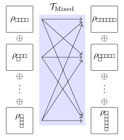
<figcaption class="paper-figure-caption"><b>Fig 1.</b> FIG. 1. Representation-theoretic structure of unitary-covariant and permutation-invariant N →N + M cloning maps, illus- trated for M = 2. (a) In pure-state cloning, the input and ideal output states lie in the symmetric subspace, so the optimal cloning map reduces to the fixed map TPure. (b) For general mixed-state cloning, the focus of this work, the cloning map TMixed is expressed as a convex combination of component maps between irrep sectors.</figcaption>
</figure>
<figure class="paper-figure-card">
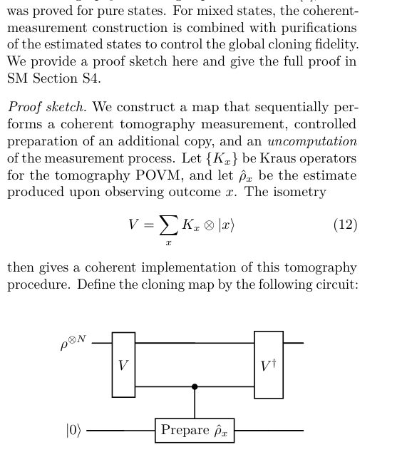
<figcaption class="paper-figure-caption"><b>Fig 2.</b> FIG. 2. An N →N + 1 cloning map constructed from a tomography algorithm.</figcaption>
</figure>
</div>
<p><strong>Summary.</strong> This theoretical paper determines the optimal resource scaling for quantum state cloning, finding the required input copies $N$ scale as $\Theta(Mrd/\epsilon)$. The authors achieve this by combining lower bounds derived from symmetry analysis with an upper bound constructed using random purification, revealing a deep connection between state cloning and quantum state tomography.</p>
<p><strong>Why it may be interesting.</strong> The result provides a fundamental resource scaling law for quantum state manipulation, connecting the complexity of cloning to the rank of the state, which is a key measure of mixedness in quantum systems.</p>
<details>
<summary>Detailed structure</summary>
<p><strong>Main problem.</strong> The paper determines the optimal asymptotic copy complexity required to approximately clone an unknown quantum state $
ho$ from $N$ input copies to produce $M$ additional copies.</p>
<p><strong>Main result.</strong> The optimal copy complexity is established as $N = \Theta(Mrd/\epsilon)$, where $r$ is the rank of the state, $d$ is the dimension, and $\epsilon$ is the error tolerance.</p>
<p><strong>Method.</strong> The authors use symmetry arguments, Schur-Weyl duality, and the construction of an upper bound via random purification to derive the necessary and sufficient scaling law.</p>
<p><strong>Model / system.</strong> The focus is on $d$-dimensional quantum states $
ho$ of rank at most $r$. The task is to approximate the transformation $
ho^{\otimes N}  o 
ho^{\otimes (N+M)}$ while maintaining a fidelity of at least $1-\epsilon$.</p>
<p><strong>Key observables.</strong> Uhlmann fidelity $F(
ho, \sigma)$, input copy number $N$, and the number of copies to clone $M$.</p>
<p><strong>Important parameters / regimes.</strong> The state dimension $d$, the state rank $r$, the number of copies $M$, and the error tolerance $\epsilon$.</p>
<p><strong>Assumptions / limitations.</strong> The analysis is performed in the asymptotic regime ($\epsilon 	o 0$), and the lower bound proof relies on analyzing a specific family of states with a fixed flat spectrum.</p>
<p><strong>Figures summary.</strong> Figure 1 illustrates the representation-theoretic structure of cloning maps for $M=2$, comparing pure-state and mixed-state decompositions. Figure 2 shows a circuit diagram for an $N 	o N+1$ cloning map derived from tomography.</p>
<p><strong>Paper structure.</strong> The paper progresses from the known pure-state cloning result to the general mixed-state case. It establishes the lower bound using symmetry arguments on hard instances, and then constructs the matching upper bound using random purification, culminating in a connection to quantum state tomography.</p>
</details>
<details>
<summary>Abstract</summary>
<p>Quantum state cloning is the task of approximately producing additional copies of an unknown quantum state from a finite number of input copies. The optimal cloning fidelity is known exactly for pure states, but no comparable characterization is known for general mixed states. We determine the optimal asymptotic copy complexity for $d$-dimensional states of rank at most $r$: producing $M$ additional copies with worst-case fidelity at least $1-\varepsilon$ requires and is achievable with $N=Θ(Mrd/\varepsilon)$ input copies. Remarkably, the lower bound already holds for a family of states with a fixed flat spectrum, while the matching upper bound is achieved by random purification followed by optimal pure-state cloning. For $M=1$, we further show that high-fidelity tomography can be coherently converted into cloning with comparable error, revealing an operational origin of the matching cloning and tomography complexities.</p>
</details>
<p><sub><a href="#top">↑ back to top</a></sub></p>

<p><a id="paper-2608.24493"></a></p>
<h3 id="optimal-lower-bound-for-ground-state-energy-estimation-with-a-guiding-state"><a href="http://arxiv.org/abs/2608.24493v1">Optimal Lower Bound for Ground-State Energy Estimation with a Guiding State</a></h3>
<p><strong>Authors:</strong> Rolando D. Somma, Ronald de Wolf<br>
<strong>Type:</strong> theory · <strong>Category:</strong> quantum information and computing · <strong>PDF:</strong> <a href="https://arxiv.org/pdf/2608.24493v1">https://arxiv.org/pdf/2608.24493v1</a><br>
<strong>Analysis basis:</strong> full PDF text, analyzed in chunks</p>
<div class="figure-strip-hint">↔ Scroll figures horizontally</div>
<div class="paper-figures-scroll">
<figure class="paper-figure-card">
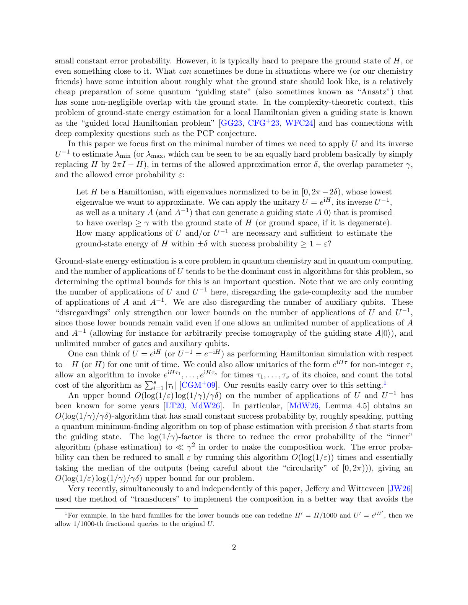
<figcaption class="paper-figure-caption"><b>Fig 1.</b> Low-resolution page preview, page 2</figcaption>
</figure>
<figure class="paper-figure-card">
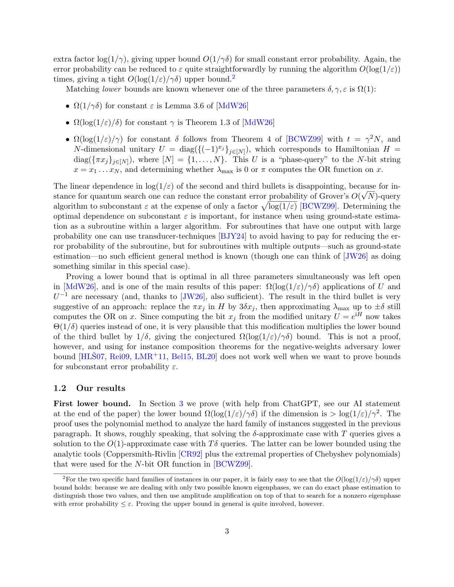
<figcaption class="paper-figure-caption"><b>Fig 2.</b> Low-resolution page preview, page 3</figcaption>
</figure>
<figure class="paper-figure-card">
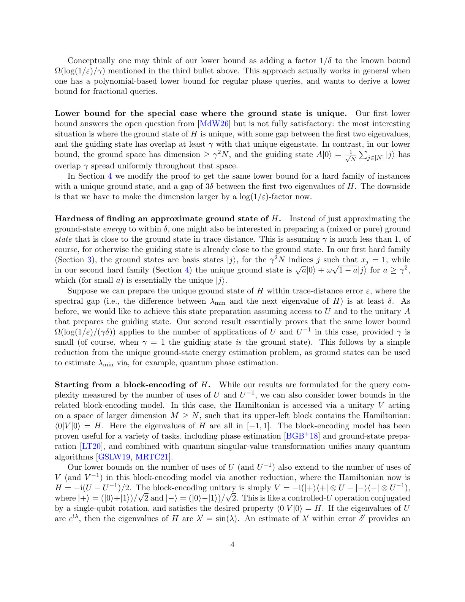
<figcaption class="paper-figure-caption"><b>Fig 3.</b> Low-resolution page preview, page 4</figcaption>
</figure>
<figure class="paper-figure-card">
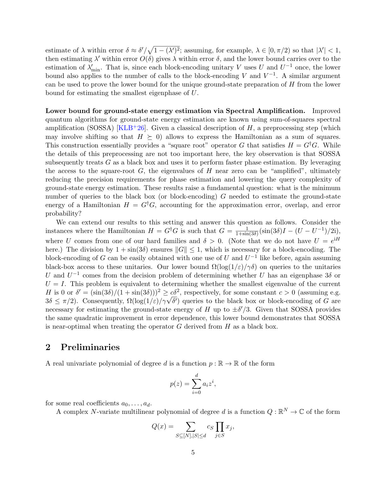
<figcaption class="paper-figure-caption"><b>Fig 4.</b> Low-resolution page preview, page 5</figcaption>
</figure>
<figure class="paper-figure-card">
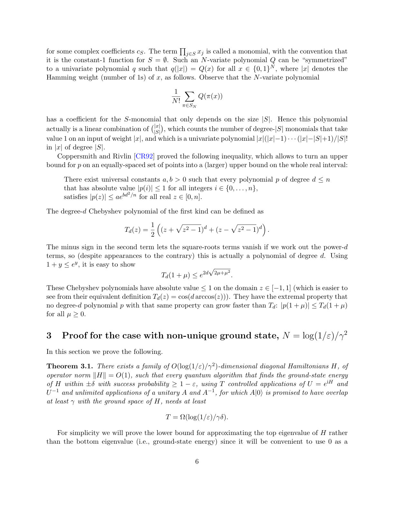
<figcaption class="paper-figure-caption"><b>Fig 5.</b> Low-resolution page preview, page 6</figcaption>
</figure>
</div>
<p><strong>Summary.</strong> This paper rigorously determines the minimum number of queries needed to estimate the ground-state energy of a quantum system using a guiding state. By employing advanced techniques from polynomial approximation theory, it establishes an optimal lower bound of $\Omega(\log(1/\epsilon)/(\gamma\delta))$. This result is crucial for understanding the fundamental computational limits of quantum simulation algorithms.</p>
<p><strong>Why it may be interesting.</strong> This work provides fundamental complexity lower bounds for quantum simulation tasks, directly impacting the theoretical limits of quantum algorithms used to characterize quantum many-body ground states.</p>
<details>
<summary>Detailed structure</summary>
<p><strong>Main problem.</strong> The paper establishes the optimal lower bound for the number of queries required to estimate the ground-state energy of a Hamiltonian, given access to its unitary evolution and a guiding state.</p>
<p><strong>Main result.</strong> The joint lower bound for the query complexity is proven to be $\Omega(\log(1/\epsilon)/(\gamma\delta))$, matching the recently established upper bound.</p>
<p><strong>Method.</strong> The proof heavily relies on the polynomial method, using tools like Chebyshev polynomials to derive lower bounds on the degree of approximating polynomials based on the required separation of function values.</p>
<p><strong>Model / system.</strong> The problem is framed in the guided Hamiltonian problem, involving a Hamiltonian $H$ whose unitary $U=e^{iH}$ is accessible, along with a guiding state preparation unitary $A$ that overlaps with the ground space by $\gamma$.</p>
<p><strong>Key observables.</strong> Ground-state energy ($\lambda_{\min}$), approximation error ($\delta$), and success probability ($\epsilon$).</p>
<p><strong>Important parameters / regimes.</strong> The complexity scales inversely with the product of the overlap ($\gamma$) and the spectral gap ($\delta$), and logarithmically with the inverse of the error ($\epsilon$).</p>
<p><strong>Assumptions / limitations.</strong> The lower bound proof requires the dimension of $H$ to be sufficiently large, and the results are shown to hold for various access models like block-encoding and fractional powers of $U$.</p>
<p><strong>Paper structure.</strong> The paper builds upon previous work by establishing the general joint lower bound $\Omega(\log(1/\epsilon)/(\gamma\delta))$ using the polynomial method, and then extends this result to special cases like unique ground states and ground-state preparation.</p>
</details>
<details>
<summary>Abstract</summary>
<p>The guided Hamiltonian problem is the following: given access to the unitary $U=e^{i H}$ for some Hamiltonian $H$, and given access to a unitary that prepares a guiding state promised to have overlap at least $γ>0$ with the ground space of $H$, estimate the ground-state energy of $H$ within additive error $δ> 0$ and success probability at least $1-\varepsilon $, $\varepsilon>0$. How many applications of $U$ and its inverse $U^{-1}$ are necessary and sufficient? An upper bound $O(\log(1/\varepsilon)\log(1/γ)/γδ)$ was known, and was improved to $O(\log(1/\varepsilon)/γδ)$ very recently [JW26]. A matching lower bound was known whenever one of the three parameters $δ,γ,\varepsilon$ was held constant [MdW26]. In this paper we prove the joint lower bound $Ω(\log(1/\varepsilon)/γδ)$ with the tight $\varepsilon$-dependence provided the dimension of $H$ is at least $\log(1/\varepsilon)/γ^2$. Furthermore, we show that this same lower bound (with slightly larger dimension) holds for both the special case in which the ground state is guaranteed to be unique and $H$ has a gap of $δ$ between its first and second eigenvalue; and for ground-state preparation, where $δ$ denotes the spectral gap and $\varepsilon$ now is the approximation error. The lower bounds also apply when the Hamiltonian can be accessed via its block-encoding, and when fractional powers of $U$ are allowed, as in continuous-time Hamiltonian simulation. Lastly, improved upper bounds are known when $H$ is nonnegative and presented as a sum of squares; and our results imply the lower bound $Ω(\log(1/\varepsilon)/γ\sqrtδ)$ for this case.</p>
</details>
<p><sub><a href="#top">↑ back to top</a></sub></p>

<p><a id="paper-2608.23929"></a></p>
<h3 id="quantum-algorithms-and-hardness-for-point-count-approximation-over-finite-fields"><a href="http://arxiv.org/abs/2608.23929v1">Quantum Algorithms and Hardness for Point-Count Approximation over Finite Fields</a></h3>
<p><strong>Authors:</strong> Yota Maeda, Hiroshi Yano<br>
<strong>Type:</strong> theory · <strong>Category:</strong> quantum information and computing · <strong>PDF:</strong> <a href="https://arxiv.org/pdf/2608.23929v1">https://arxiv.org/pdf/2608.23929v1</a><br>
<strong>Analysis basis:</strong> full PDF text, analyzed in chunks</p>
<div class="figure-strip-hint">↔ Scroll figures horizontally</div>
<div class="paper-figures-scroll">
<figure class="paper-figure-card">
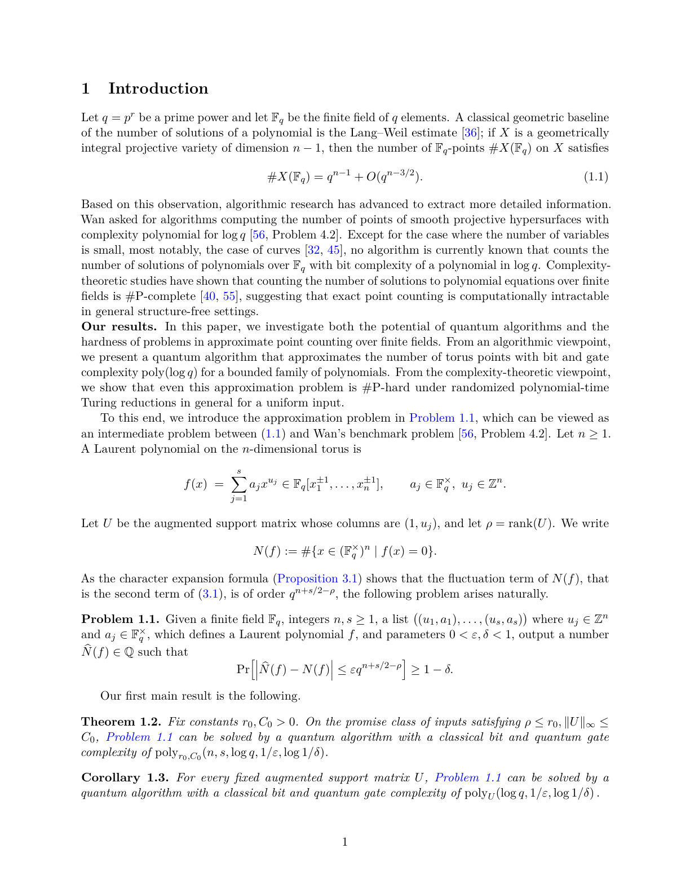
<figcaption class="paper-figure-caption"><b>Fig 1.</b> Low-resolution page preview, page 2</figcaption>
</figure>
<figure class="paper-figure-card">
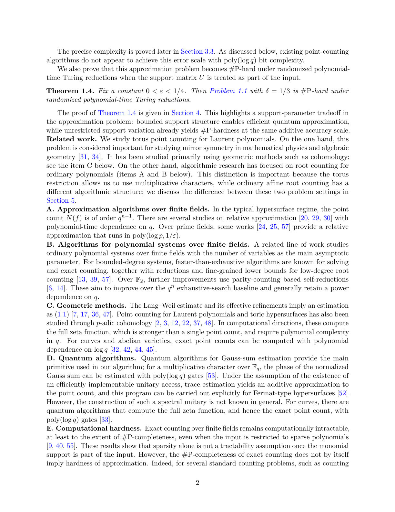
<figcaption class="paper-figure-caption"><b>Fig 2.</b> Low-resolution page preview, page 3</figcaption>
</figure>
<figure class="paper-figure-card">
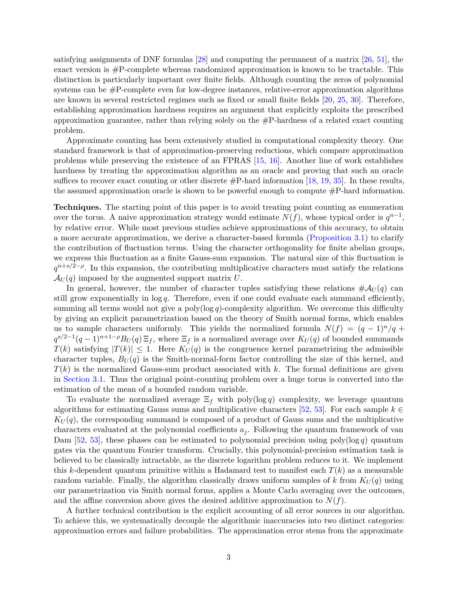
<figcaption class="paper-figure-caption"><b>Fig 3.</b> Low-resolution page preview, page 4</figcaption>
</figure>
<figure class="paper-figure-card">
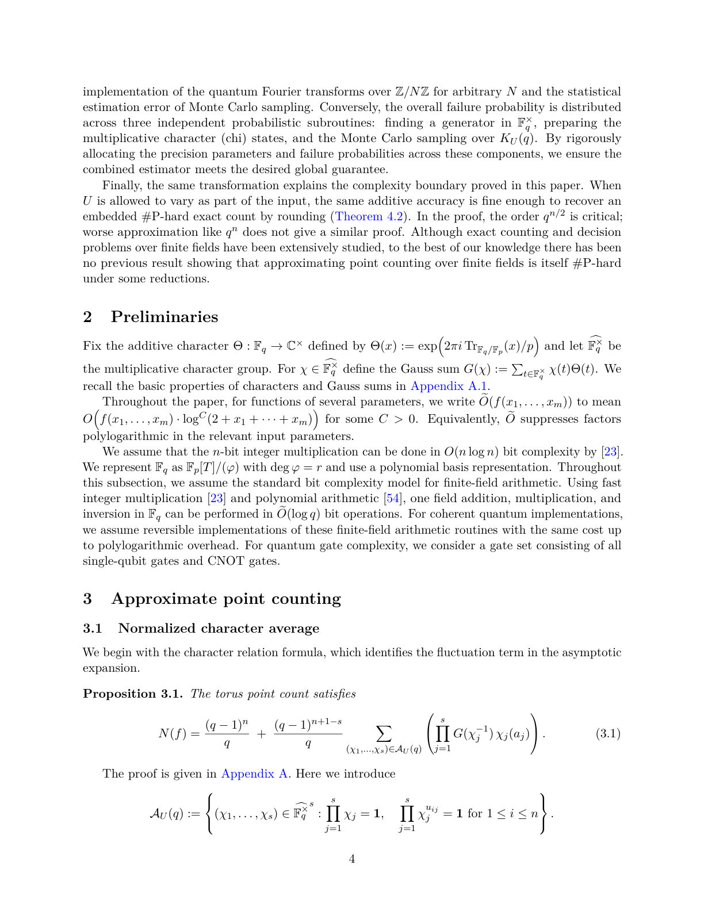
<figcaption class="paper-figure-caption"><b>Fig 4.</b> Low-resolution page preview, page 5</figcaption>
</figure>
<figure class="paper-figure-card">
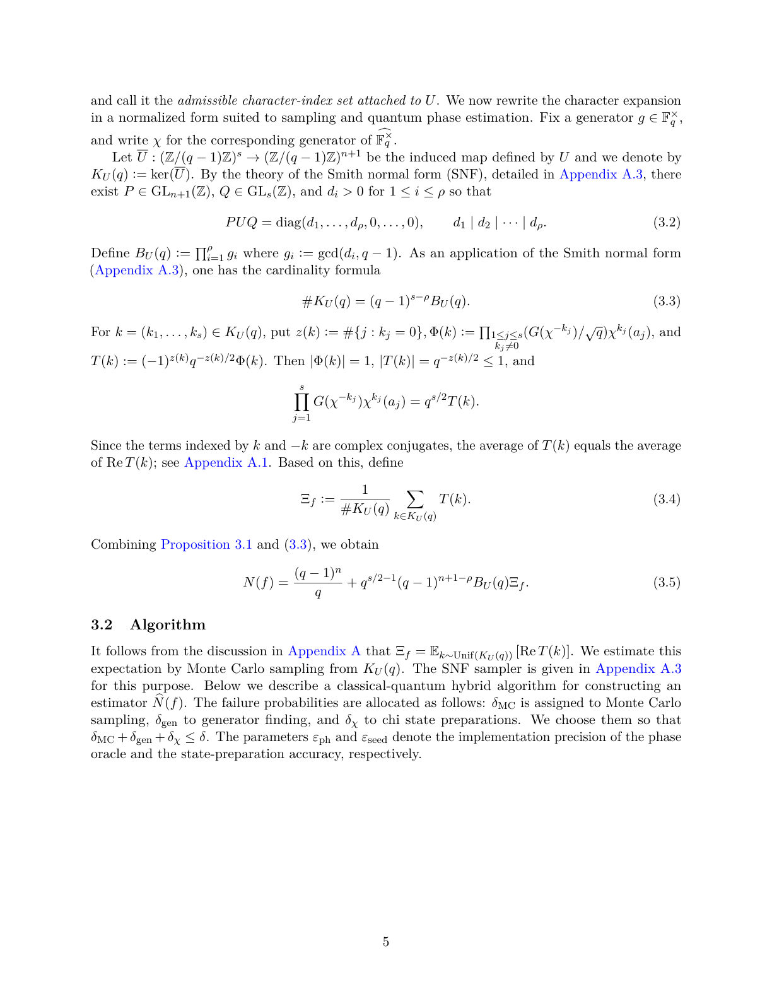
<figcaption class="paper-figure-caption"><b>Fig 5.</b> Low-resolution page preview, page 6</figcaption>
</figure>
</div>
<p><strong>Summary.</strong> This paper develops a quantum algorithm to efficiently approximate the number of solutions to Laurent polynomials over finite fields, achieving an additive error bound. It also proves that the general version of this counting problem is $\#	ext{P}$-hard. The work clarifies the trade-off between the required accuracy and the structural complexity of the input polynomial.</p>
<p><strong>Why it may be interesting.</strong> While the problem is purely number-theoretic, the development of quantum algorithms to solve computationally hard counting problems over finite fields connects directly to quantum complexity theory and the limits of quantum computation.</p>
<details>
<summary>Detailed structure</summary>
<p><strong>Main problem.</strong> The paper addresses the problem of approximating the number of solutions, $N(f)$, to a Laurent polynomial $f(x)$ over a finite field $\mathbb{F}_q$.</p>
<p><strong>Main result.</strong> It presents a quantum algorithm achieving an additive approximation guarantee for $N(f)$ under certain structural constraints on the polynomial's support matrix, and proves the problem is $\#	ext{P}$-hard when the support matrix varies freely.</p>
<p><strong>Method.</strong> The approach combines character sum expansions derived from algebraic geometry with quantum estimation techniques, specifically leveraging the Quantum Fourier Transform (QFT) for estimating Gauss sums.</p>
<p><strong>Model / system.</strong> The mathematical model is the set of solutions to a Laurent polynomial $f(x) = \sum a_j x^{u_j}$ defined over the multiplicative group $(\mathbb{F}_q^	imes)^n$. The complexity analysis is performed in terms of quantum gate and classical bit complexity.</p>
<p><strong>Key observables.</strong> The primary observable is $N(f) = \#\{x \in (\mathbb{F}_q^	imes)^n \mid f(x) = 0\}$, and the algorithm estimates this value within an additive error bound $\varepsilon q^{n+s/2-
ho}$.</p>
<p><strong>Important parameters / regimes.</strong> Key parameters include the field size $q$, the polynomial support size $s$, the dimension $n$, and the rank $
ho$ of the augmented support matrix $U$.</p>
<p><strong>Assumptions / limitations.</strong> The quantum algorithm's polynomial complexity relies on bounding the rank $
ho$ and the infinity norm of the support matrix $\|U\|_{\infty}$. The hardness proof relies on the ability to recover the count from the approximation error.</p>
<p><strong>Paper structure.</strong> The paper first introduces the quantum algorithm for approximation (Theorem 1.2), followed by an alternative classical-quantum hybrid approach using character sums (Algorithm 1). It then establishes the computational hardness of the problem (Theorem 1.4 and Theorem D.3) by reducing from antichain counting.</p>
</details>
<details>
<summary>Abstract</summary>
<p>We study the approximation of the number of solutions of Laurent polynomials over finite fields. For a Laurent polynomial \[f(x)=\sum_{j=1}^{s}a_jx^{u_j}\in \mathbb{F}_q[x_1^{\pm1},\ldots,x_n^{\pm1}], \] let $U$ be its augmented support matrix whose columns are $(1,u_j)$ with rank $ρ$ and $N(f) := \# \{x\in (\mathbb{F}_q^\times)^n \mid f(x)=0\}$ be its torus point count. Our first main result is a quantum algorithm that outputs $\widehat{N}(f)$ satisfying \[ |\widehat{N}(f) - N(f)| \le \varepsilon q^{n+s/2-ρ} \] with success probability $1-δ$. Provided that $ρ$ and $\|U\|_\infty$ are bounded, the algorithm runs in both classical bit and quantum gate complexity $\mathrm{poly}(n, s, \log q, 1/\varepsilon, \log(1/δ))$. It provides finer resolution than relative-error approximations in general settings. To the best of our knowledge, in the explicit finite-field input model considered here, no previous algorithm achieves this additive accuracy with running time polynomial in $\log q$. Van Dam (arXiv:quant-ph/0405081) conjectured the existence of such an algorithm under the assumption of an oracle reflecting the algebraic properties of the polynomial. In contrast, by exploiting a point-counting formula derived from character sums over finite fields, we develop an alternative approach that efficiently approximates the number of points without assuming the existence of such an oracle. As a second main result, we prove that the same approximation problem becomes $\#$P-hard under randomized polynomial-time Turing reductions when the support matrix $U$ varies freely as part of the input. Thus, taken together, our results clarify how the effectiveness of the quantum approach depends on the tradeoff between the accuracy scale and the support parameters of the input polynomial.</p>
</details>
<p><sub><a href="#top">↑ back to top</a></sub></p>

<p><a id="paper-2608.24144"></a></p>
<h3 id="stabq-quantum-program-analysis-via-weighted-stabilizer-representations"><a href="http://arxiv.org/abs/2608.24144v1">StabQ: Quantum Program Analysis via Weighted Stabilizer Representations</a></h3>
<p><strong>Authors:</strong> Shangzhou Xia, Junjie Luo, Jianjun Zhao<br>
<strong>Type:</strong> theory · <strong>Category:</strong> quantum information and computing · <strong>PDF:</strong> <a href="https://arxiv.org/pdf/2608.24144v1">https://arxiv.org/pdf/2608.24144v1</a><br>
<strong>Analysis basis:</strong> full PDF text, analyzed in chunks</p>
<div class="figure-strip-hint">↔ Scroll figures horizontally</div>
<div class="paper-figures-scroll">
<figure class="paper-figure-card">
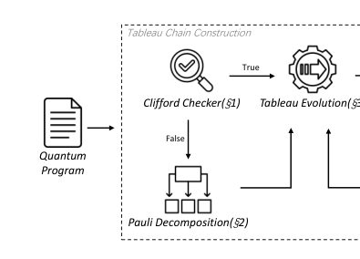
<figcaption class="paper-figure-caption"><b>Fig 1.</b> Fig. 1. Workflow of StabQ.</figcaption>
</figure>
<figure class="paper-figure-card">
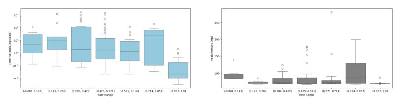
<figcaption class="paper-figure-caption"><b>Fig 2.</b> Fig. 2. Time and memory overhead of StabQ model construction across benchmark circuits. The box plots show the distributions of model building time and peak memory consumption when the benchmark circuits are grouped by qubit number, gate number, and Clifford rate. The y-axes of the time overhead are logarithmic.</figcaption>
</figure>
</div>
<p><strong>Summary.</strong> This paper introduces StabQ, a novel symbolic execution framework designed to analyze general quantum programs containing non-Clifford gates. It extends traditional stabilizer-based methods by representing states using weighted stabilizer tableaux and tracking execution history via a Tableau Chain. This allows for accurate, semantically consistent analysis of complex quantum computations.</p>
<p><strong>Why it may be interesting.</strong> It provides a formal, symbolic tool to analyze complex quantum circuits beyond the restricted Clifford group, which is crucial for verifying algorithms involving arbitrary gates.</p>
<details>
<summary>Detailed structure</summary>
<p><strong>Main problem.</strong> Quantum program analysis is difficult due to the exponentially large state space and the complexity introduced by non-Clifford quantum operations.</p>
<p><strong>Main result.</strong> StabQ successfully extends stabilizer-based symbolic execution to analyze general quantum programs, maintaining semantic consistency across non-Clifford gates.</p>
<p><strong>Method.</strong> It uses a symbolic execution framework that represents states as weighted combinations of stabilizer tableaux, incorporating a Pauli-decomposition mechanism to handle non-Clifford gates.</p>
<p><strong>Model / system.</strong> The model is general quantum computation realized by quantum circuits, analyzed symbolically through the evolution of quantum states.</p>
<p><strong>Key observables.</strong> Quantum state evolution, entanglement, and the detection of Clifford properties.</p>
<p><strong>Important parameters / regimes.</strong> The complexity scales with the number of qubits and the depth of the circuit, mitigated by tableau consolidation.</p>
<p><strong>Assumptions / limitations.</strong> The Pauli-decomposition mechanism allows non-Clifford operations to be integrated into the symbolic framework while preserving semantic fidelity.</p>
<p><strong>Paper structure.</strong> The paper introduces the limitations of Clifford-only stabilizer methods, proposes StabQ to extend symbolic execution, details the Tableau Chain construction, and evaluates it on benchmark suites.</p>
</details>
<details>
<summary>Abstract</summary>
<p>Quantum program analysis remains challenging due to the exponentially large state space of quantum programs and the difficulty of precisely characterizing their execution behavior. In particular, non-Clifford operations introduce additional complexity that limits the applicability of stabilizer-based techniques. Although stabilizer representations provide compact descriptions for Clifford circuits, their limited expressiveness prevents them from directly supporting general quantum program analysis. In this work, we propose StabQ, a symbolic execution framework for quantum program analysis based on stabilizer representations. StabQ extends stabilizer-based symbolic execution beyond Clifford-only programs by introducing a symbolic state representation that captures and propagates quantum state evolution while preserving execution semantics. Based on this representation, StabQ constructs a Tableau Chain that represents the evolution of intermediate symbolic states throughout program execution and enables reusable analysis of quantum program executions. Furthermore, StabQ incorporates tableau consolidation and global-phase recovery mechanisms to mitigate symbolic state growth during execution. Building upon the Tableau Chain, StabQ supports multiple quantum program analysis tasks, including quantum state reconstruction, entanglement analysis, and Clifford-property detection. We evaluate StabQ on three benchmark suites---Algorithms, MQT Bench, and QASMBench. The results demonstrate that StabQ constructs semantically consistent symbolic models, accurately preserves quantum state evolution, and effectively supports downstream analysis tasks across diverse quantum programs.</p>
</details>
<p><sub><a href="#top">↑ back to top</a></sub></p>

<p><a id="paper-2608.24227"></a></p>
<h3 id="two-microscopic-mechanisms-of-piezomagnetism-in-cofmath1013math-from-first-principles-calculations"><a href="http://arxiv.org/abs/2608.24227v1">Two Microscopic Mechanisms of Piezomagnetism in CoF$_2$ from First-Principles Calculations</a></h3>
<p><strong>Authors:</strong> Hiroshi Katsumoto, Tamio Oguchi, Kunihiko Yamauchi<br>
<strong>Type:</strong> theory · <strong>Category:</strong> strongly correlated electrons · <strong>PDF:</strong> <a href="https://arxiv.org/pdf/2608.24227v1">https://arxiv.org/pdf/2608.24227v1</a><br>
<strong>Analysis basis:</strong> full PDF text, analyzed in chunks</p>
<div class="figure-strip-hint">↔ Scroll figures horizontally</div>
<div class="paper-figures-scroll">
<figure class="paper-figure-card">
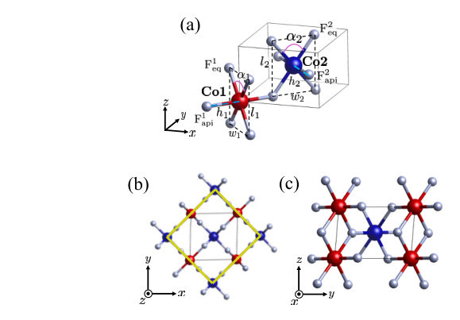
<figcaption class="paper-figure-caption"><b>Fig 1.</b> FIG. 1. Crystal structures of CoF2. In this paper, the up-spin and down-spin Co sites are referred</figcaption>
</figure>
<figure class="paper-figure-card">

<figcaption class="paper-figure-caption"><b>Fig 2.</b> FIG. 2. (a) Piezomagnetically induced magnetization along the z axis as a function of the xy shear</figcaption>
</figure>
<figure class="paper-figure-card">
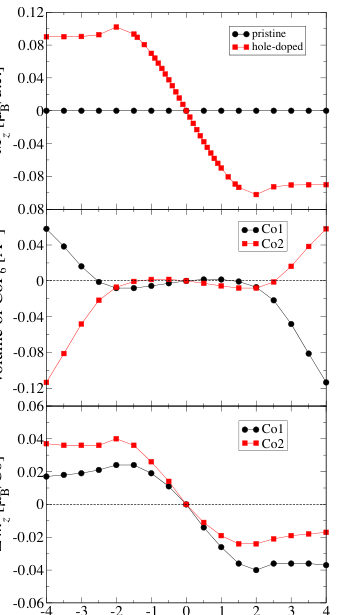
<figcaption class="paper-figure-caption"><b>Fig 3.</b> Figure 3(a) shows the induced magnetization under the yz shear strain in the presence</figcaption>
</figure>
<figure class="paper-figure-card">
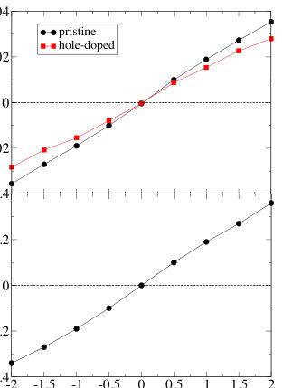
<figcaption class="paper-figure-caption"><b>Fig 4.</b> FIG. 3. (a) Induced magnetization along the x axis as a function of the yz shear strain with</figcaption>
</figure>
<figure class="paper-figure-card">

<figcaption class="paper-figure-caption"><b>Fig 5.</b> Figure 3(b) shows the canting angle of the magnetic moments as a function of the yz</figcaption>
</figure>
</div>
<p><strong>Summary.</strong> This theoretical study uses first-principles calculations to uncover the microscopic origins of piezomagnetism in $    ext{CoF}_2$. It reveals two distinct mechanisms: strain-induced moment imbalance via octahedral volume changes under $  ext{xy}$ shear, and spin canting driven by the Dzyaloshinskii–Moriya interaction under $    ext{yz}$ shear. This suggests that piezomagnetism in antiferromagnets can arise from fundamentally different physical origins.</p>
<p><strong>Why it may be interesting.</strong> The identification of distinct, symmetry-breaking mechanisms (one electronic/structural, one relativistic/spin-texture) provides a deep, microscopic understanding of magnetoelectric coupling in transition metal compounds, which is relevant to emergent quantum phenomena.</p>
<details>
<summary>Detailed structure</summary>
<p><strong>Main problem.</strong> To reveal the microscopic origins of piezomagnetism in the prototypical piezomagnetic and altermagnetic material, $   ext{CoF}_2$.</p>
<p><strong>Main result.</strong> Two distinct mechanisms were found: one nonrelativistic mechanism driven by unequal local volumes under $  ext{xy}$ shear strain, and a relativistic mechanism arising from $  ext{SOC}$-induced spin canting via the Dzyaloshinskii–Moriya interaction under $    ext{yz}$ shear strain.</p>
<p><strong>Method.</strong> First-principles electronic-structure calculations using DFT with the PAW method, incorporating noncollinear formalism and applying specific shear strains ($   ext{xy}$ and $  ext{yz}$).</p>
<p><strong>Model / system.</strong> The study focuses on the rutile-structured $    ext{CoF}_2$ crystal, analyzing its magnetic and electronic response when subjected to external shear strains.</p>
<p><strong>Key observables.</strong> Induced magnetization ($M$), local volumes of $   ext{CoF}_6$ octahedra, local magnetic moments on different sublattices, and piezomagnetic tensor components ($\Lambda_{ijk}$).</p>
<p><strong>Important parameters / regimes.</strong> Shear strains ($\varepsilon_{	ext{xy}}, \varepsilon_{	ext{yz}}$), the presence/absence of Spin-Orbit Coupling (SOC), and doping levels (pristine vs. hole-doped).</p>
<p><strong>Assumptions / limitations.</strong> The analysis relies on linear fits for calculating strain-form coefficients within specified strain limits ($|\varepsilon_{	ext{xy}}| \le 0.5$, $|\varepsilon_{	ext{yz}}| \le 1.0$).</p>
<p><strong>Figures summary.</strong> Figures illustrate structural changes, induced magnetization vs. strain for both shear types, and electronic band structures/PDOS changes corresponding to the different physical mechanisms.</p>
<p><strong>Paper structure.</strong> The paper systematically analyzes the piezomagnetic response under two distinct shear strains ($   ext{xy}$ and $  ext{yz}$), detailing the physical origin (volume mismatch vs. DMI/SOC) and quantifying the resulting magnetic moments and coefficients.</p>
</details>
<details>
<summary>Abstract</summary>
<p>Rutile-structured CoF$_2$ has long been recognized as a prototypical piezomagnetic material. Recently, it has attracted renewed interest as an altermagnet, exhibiting spin-split electronic bands even in the absence of spin-orbit coupling. Although the piezomagnetic response of CoF$_2$ has been extensively discussed from the viewpoint of magnetic symmetry, its microscopic origin has remained elusive. First-principles calculations reveal two distinct microscopic mechanisms of piezomagnetism in CoF$_2$. Under $xy$ shear strain, the local volumes of the CoF$_6$ octahedra surrounding the two Co sites become different, leading to unequal magnetic moments on the two sublattices and hence a net magnetization. In contrast, under $yz$ shear strain, the piezomagnetic response originates from spin canting induced by the Dzyaloshinskii--Moriya interaction through spin-orbit coupling. The presence of two distinct microscopic mechanisms may be a general feature of piezomagnetic antiferromagnets.</p>
</details>
<p><sub><a href="#top">↑ back to top</a></sub></p>

<p><a id="paper-2608.24631"></a></p>
<h3 id="when-similarity-is-interaction-driven-quantum-kernels-for-regime-sensitive-learning"><a href="http://arxiv.org/abs/2608.24631v1">When Similarity Is Interaction-Driven: Quantum Kernels for Regime-Sensitive Learning</a></h3>
<p><strong>Authors:</strong> Hanqiu Peng, Jianlong Lu, Ying Chen<br>
<strong>Type:</strong> both · <strong>Category:</strong> other · <strong>PDF:</strong> <a href="https://arxiv.org/pdf/2608.24631v1">https://arxiv.org/pdf/2608.24631v1</a><br>
<strong>Analysis basis:</strong> full PDF text, analyzed in chunks</p>
<div class="figure-strip-hint">↔ Scroll figures horizontally</div>
<div class="paper-figures-scroll">
<figure class="paper-figure-card">

<figcaption class="paper-figure-caption"><b>Fig 1.</b> Figure 1: Learning curves for the balanced (d, k) = (20, 4) setting. Lines and bands show mean test accuracy and ±1 standard deviation.</figcaption>
</figure>
</div>
<p><strong>Summary.</strong> This work proposes an interaction-driven quantum kernel designed for machine learning tasks where data similarity depends on complex, high-order variable interactions. By encoding these interactions via entangled Pauli-string feature maps, the kernel achieves superior predictive performance on synthetic and real-world fraud detection benchmarks. The study emphasizes that the advantage lies in the feature-map's geometric alignment with the underlying physical structure, rather than quantum computational speedup.</p>
<p><strong>Why it may be interesting.</strong> While the application is in ML, the use of entangled Pauli-string feature maps and the focus on encoding specific, high-order correlations relates to how complex quantum states can represent structured correlations, which is relevant to understanding entanglement structure in many-body systems.</p>
<details>
<summary>Detailed structure</summary>
<p><strong>Main problem.</strong> The paper addresses how similarity in complex decision systems, such as fraud detection, is governed by high-order interactions between variables rather than simple Euclidean distance.</p>
<p><strong>Main result.</strong> The proposed interaction-driven quantum kernel consistently outperforms standard kernels on synthetic benchmarks and achieves state-of-the-art performance on real-world fraud detection datasets.</p>
<p><strong>Method.</strong> They introduce a thin-slab interaction model and construct a quantum kernel using entangled Pauli-string feature maps that explicitly encode sparse, high-order block interactions.</p>
<p><strong>Model / system.</strong> The model is a quantum kernel applied to data structured into disjoint blocks, where the label generation is based on planted high-order block interactions, creating a regime-sensitive learning task.</p>
<p><strong>Key observables.</strong> Mean accuracy and F1 score on fraud detection benchmarks; the kernel's ability to induce a geometry sensitive to interaction regimes.</p>
<p><strong>Important parameters / regimes.</strong> Interaction order (up to eighth-order); input dimension (up to 80 dimensions); imbalance ratio of the data.</p>
<p><strong>Assumptions / limitations.</strong> The performance advantage is shown to be predictive and representational, not necessarily evidence of a computational quantum speedup, as the kernel is classically evaluable.</p>
<p><strong>Paper structure.</strong> The paper introduces the thin-slab model, proposes the interaction-driven quantum kernel, proves its theoretical properties (PSD, block-factorized), and validates its performance through controlled synthetic experiments across various interaction orders, culminating in real-world fraud detection benchmarks.</p>
</details>
<details>
<summary>Abstract</summary>
<p>Similarity in many decision systems is governed not by distance alone but by interactions among variables. In fraud and anomaly detection, small local perturbations can cross interaction-sensitive decision boundaries while leaving ambient distance almost unchanged. Motivated by this setting, we introduce a thin-slab interaction model and an interaction-driven quantum kernel constructed from entangled Pauli-string feature maps. The feature map explicitly encodes sparse high-order block interactions. We show that the resulting fidelity kernel is positive semidefinite, admits an exact block-factorized formulation, and induces a geometry sensitive to changes in interaction regime. Across balanced and imbalanced synthetic experiments spanning third-, fourth-, sixth-, and eighth-order interactions, the proposed kernel consistently outperforms linear, radial basis function, Laplacian, and polynomial kernels, as well as an engineered-interaction linear baseline supplied with the planted block products. On real fraud-detection benchmarks, it achieves the highest mean accuracy and F1 on Credit Card Fraud Detection and ranks second on IEEE-CIS Fraud Detection. These findings show that quantum-kernel performance depends on alignment between feature-map geometry and the underlying predictive structure, rather than on Hilbert-space dimension alone. Because the prescribed block-factorized kernel can also be evaluated exactly on a classical computer, the results establish predictive and representational value rather than computational quantum speedup.</p>
</details>
<p><sub><a href="#top">↑ back to top</a></sub></p>
</details>
<h2 id="secondary-cond-mat-archives">Secondary cond-mat archives</h2>
<p><em>Papers from cond-mat.mtrl-sci, mes-hall, other, soft, supr-con. These archives are de-prioritized — they appear at the end regardless of relevance score.</em></p>
<h3 id="relevant-in-secondary-archives-15">Relevant in secondary archives (15)</h3>

<p><a id="paper-2608.23902"></a></p>
<h3 id="nonequilibrium-pulse-dynamics-and-metastable-latching-in-nonlinear-kinetic-inductance-detectors"><a href="http://arxiv.org/abs/2608.23902v1">Nonequilibrium pulse dynamics and metastable latching in nonlinear kinetic inductance detectors</a></h3>
<p><strong>Authors:</strong> M. Rouble, C. Albert, P. Day, M. Dobbs, H. G. Leduc, J. Montgomery<br>
<strong>Type:</strong> both · <strong>Category:</strong> other · <strong>PDF:</strong> <a href="https://arxiv.org/pdf/2608.23902v1">https://arxiv.org/pdf/2608.23902v1</a><br>
<strong>Analysis basis:</strong> full PDF text, analyzed in chunks
<strong>Topic relevance:</strong> 🔥 <code>driven-dissipative phase transition</code> <strong>4/5</strong> · <code>non-equilibrium universality</code> <strong>3/5</strong> · <code>methods for driven-dissipative</code> <strong>2/5</strong> · <code>Keldysh / 2PI / non-Gaussian methods</code> <strong>1/5</strong> · <code>analog quantum simulation</code> <strong>1/5</strong> · <code>correlated / nonlocal dissipation</code> <strong>1/5</strong> · <code>quantum measurements</code> <strong>1/5</strong> · <code>scars &amp; prethermalization</code> <strong>1/5</strong></p>
<div class="figure-strip-hint">↔ Scroll figures horizontally</div>
<div class="paper-figures-scroll">
<figure class="paper-figure-card">

<figcaption class="paper-figure-caption"><b>Fig 1.</b> FIG. 1. Equivalent descriptions of a driven resonator, with components affected by the readout current highlighted with colours. (a) A side-coupled resonator modeled as a one-port Kerr cavity embedded in a symmetric three-port network. A generator tone of power Pg enters the network from the syn- thesizer, producing an intracavity field b(t) with average pho- ton occupancy nph; the transmitted field is measured at the digitizer. This representation is used to describe the feed- back parameter space and infinitesimal perturbations from the steady-state nonlinear detuning. (b) Lumped-element cir- cuit representation of the same resonator. Absorbed optical load changes the quasiparticle...</figcaption>
</figure>
<figure class="paper-figure-card">

<figcaption class="paper-figure-caption"><b>Fig 2.</b> FIG. 3. Effect of absorbed pulse energy on pulse response. The resonator is biased to a point just within the critical point, while the size of the injected quasiparticle pulse is var- ied. The response of the same resonator to the same injected pulses under a linear bias point is shown in dashed lines. In the linear case, the amplitude of the response is proportional to the size of the input pulse and the decay shape follows the same exponential shape as the recombination of the quasi- particles. In the nonlinear case, the response increases with input pulse size but the scales are not linearly related, and the shape of the response is distorted. For small pulses the rise time is notably...</figcaption>
</figure>
<figure class="paper-figure-card">

<figcaption class="paper-figure-caption"><b>Fig 3.</b> FIG. 2. Calculated effect of bias point on pulse response. Identical quasiparticle pulses are applied to the same res- onator prepared at different bias points, both linear (blue dashed lines) and nonlinear (orange solid lines). In the linear case, the generator is located at three offset frequencies (where x0 ≃x since the nonlinear resonance shift is negligible) from the relaxed resonant frequency, at the same power. An × marks the location of the undriven resonant frequency. In the nonlinear case, the generator frequency is at fixed x0 ≃x0,c, with Pg increased to vary the nonlinear detuning, x. The location of the driven resonant frequency is marked with a triangle for each detuning on...</figcaption>
</figure>
<figure class="paper-figure-card">

<figcaption class="paper-figure-caption"><b>Fig 4.</b> FIG. 4. Response of a resonator to absorbed photons, mea- sured in the lab, at a linear (thin grey lines) and nonlinear (thick orange lines) operating point. The data are shown on the IQ plane (left, overlaid on a low-power frequency sweep of the same resonator) with the original timestreams shown at right. Although the readout current is non-zero in both cases, the linear bias point is at a substantially less nega- tive x0 and smaller Pg than the nonlinear bias point. At the linear bias point, the resonator response follows an exponen- tial decay, with a peak amplitude that scales with the energy of the absorbed pulse because the response is dominated by the quasiparticle transient. At the...</figcaption>
</figure>
<figure class="paper-figure-card">

<figcaption class="paper-figure-caption"><b>Fig 5.</b> FIG. 6. Measured latching response. The same resonator as in Fig. 4 is illuminated with IR photons while biased slightly be- yond the critical point. Upper panels show four measurements of the response under fixed operating conditions, in the plane of complex transmission and as continuous time streams. Suf- ficiently large absorbed energy events trigger the resonator to switch from its initial driven state to a metastable latched state corresponding to a stable solution on the other branch of the resonator transfer function, where it remains after the quasiparticle transient has decayed. The displacement of the latched state is determined by the generator power at the op- erating point,...</figcaption>
</figure>
</div>

<p><strong>Summary.</strong> This work analyzes how high readout power drives nonlinear kinetic inductance detectors into complex dynamic regimes, leading to a stable, metastable latched state. By understanding this nonlinear response, the authors propose a method for achieving tunable, threshold-based detection for single-photon and rare-event experiments. The research bridges nonlinear circuit theory with superconducting detector physics.</p>
<p><strong>Why it may be interesting.</strong> The concepts of driven nonlinear oscillators, bifurcation points, and metastable states are central to open quantum systems and quantum optics, providing a physical realization of non-trivial dynamical switching.</p>
<details>
<summary>Detailed structure</summary>
<p><strong>Main problem.</strong> The study investigates the complex pulse dynamics and the emergence of metastable latching states in nonlinear microwave kinetic inductance detectors (MKIDs) when driven by high readout power.</p>
<p><strong>Main result.</strong> Strong driving biases can induce a transition into a metastable latched state beyond resonance bifurcation, creating a tunable detection threshold independent of the initial quasiparticle transient decay.</p>
<p><strong>Method.</strong> The authors combine nonlinear resonator theory (Duffing oscillator framework) with time-domain circuit calculations to model the detector's response to absorbed energy pulses.</p>
<p><strong>Model / system.</strong> The system is a MKID modeled as a nonlinear resonator coupled to a readout circuit, where the kinetic inductance introduces nonlinearity dependent on the readout current and absorbed energy.</p>
<p><strong>Key observables.</strong> Pulse amplitude, shape, relaxation time, and the existence/stability of the latched metastable state.</p>
<p><strong>Important parameters / regimes.</strong> Readout bias power ($P_g$), frequency detuning ($x_0$), and the absorbed pulse energy.</p>
<p><strong>Assumptions / limitations.</strong> The analysis distinguishes between local steady-state behavior and finite pulse excursions, and the nonlinear response is dominated by the current-dependent inductance rather than just quasiparticle decay.</p>
<p><strong>Figures summary.</strong> Figures compare linear vs. nonlinear pulse responses under varying bias and energy, and illustrate state-space trajectories showing switching to a stable, latched branch beyond the bifurcation point.</p>
<p><strong>Paper structure.</strong> The paper progresses from establishing the nonlinear resonator framework to analyzing the time-domain response, demonstrating the transition from simple exponential decay to complex, extended, and finally, bistable/latching behavior.</p>
</details>
<details>
<summary>Abstract</summary>
<p>Microwave kinetic inductance detectors are typically operated at high readout power to raise the detector signal above system noise. At sufficiently large readout power, the current-dependent kinetic inductance couples the detector response to its readout bias. Using a nonlinear resonator framework and time-domain circuit calculations, we show that the amplitude, shape, and relaxation time of the driven detector's response depend on both the absorbed energy and on the readout bias. Strongly driven bias points produce amplified, extended, and non-exponential pulse responses. Qualitative agreement between calculated and measured pulse responses indicates that these effects are dominated by the driven nonlinear resonator dynamics rather than by altered quasiparticle dynamics. Beyond resonance bifurcation, sufficiently large pulse events drive the resonator between stable branches, resulting in a metastable latched state which persists after the quasiparticle transient has decayed. The pulse energy required for branch switching is set by the readout bias, suggesting a mode of triggered detection with an in-situ tunable threshold. Although nonlinear operation requires calibration of the bias- and energy-dependent response, the enhanced pulse amplitude and duration, together with tunable latching and the ability to select these parameters via the readout operating state, are likely to be of interest for single-photon and rare-event experiments, especially those limited by amplifier or system noise.</p>
</details>
<p><sub><a href="#top">↑ back to top</a></sub></p>

<p><a id="paper-2608.24533"></a></p>
<h3 id="floquet-engineering-of-spin-valley-selective-transport-in-jacutingaite"><a href="http://arxiv.org/abs/2608.24533v1">Floquet engineering of spin-valley selective transport in jacutingaite</a></h3>
<p><strong>Authors:</strong> Otman Bouladiane, Kamal Azaidaoui, Clarence Cortes, David Laroze, Ahmed Jellal<br>
<strong>Type:</strong> theory · <strong>Category:</strong> other · <strong>PDF:</strong> <a href="https://arxiv.org/pdf/2608.24533v1">https://arxiv.org/pdf/2608.24533v1</a><br>
<strong>Analysis basis:</strong> full PDF text, analyzed in chunks
<strong>Topic relevance:</strong> <code>Keldysh / 2PI / non-Gaussian methods</code> <strong>3/5</strong> · <code>analog quantum simulation</code> <strong>3/5</strong> · <code>driven-dissipative phase transition</code> <strong>3/5</strong> · <code>methods for driven-dissipative</code> <strong>3/5</strong> · <code>non-equilibrium universality</code> <strong>2/5</strong> · <code>interference shaping light</code> <strong>1/5</strong> · <code>quantum measurements</code> <strong>1/5</strong></p>
<div class="figure-strip-hint">↔ Scroll figures horizontally</div>
<div class="paper-figures-scroll">
<figure class="paper-figure-card">

<figcaption class="paper-figure-caption"><b>Fig 1.</b> FIG. 2. Spin- and valley-resolved energy dispersion Eηsz of monolayer Pt2HgSe3 as a function of the longitudinal wave-vector component in the leads kηsz x (a,b,c), and in the barrier region qηsz x (d,e,f) for V0 = 0.5 eV, ms = λso/2, and A0 = 0.8 Vfs/nm, with (a,d): Vz = 0, (b,e): Vz = λso/2, and (c,f): Vz = λso.</figcaption>
</figure>
<figure class="paper-figure-card">

<figcaption class="paper-figure-caption"><b>Fig 2.</b> FIG. 4. Spin- and valley-resolved transmission T ηsz (a,b) and reflection Rηsz probabilities as functions of the incident energy Eηsz for V0 = 0.5 eV, L = 4 nm, ky = 2 nm−1, ms = λso/2, and Vz = 0. (a,c): Moderate driving amplitude A0 = 0.4 Vfs/nm, and (b,d): strong driving amplitude A0 = 0.8 V fs/nm.</figcaption>
</figure>
<figure class="paper-figure-card">

<figcaption class="paper-figure-caption"><b>Fig 3.</b> FIG. 5. Spin- and valley-resolved transmission T ηsz (a,b) and reflection Rηsz (c,d) probabilities as functions of the barrier width L for V0 = 0.5 eV, Eηsz = 1.2 eV, ky = 1 nm−1, ms = λso/2 and Vz = 0. (a,c): Moderate driving amplitude A0 = 0.4 Vfs/nm, and (b,d): strong driving amplitude A0 = 0.8 V fs/nm.</figcaption>
</figure>
<figure class="paper-figure-card">

<figcaption class="paper-figure-caption"><b>Fig 4.</b> FIG. 6. Density plot of spin- and valley-resolved transmission probability T ηsz as functions of the substrate mass ms and the sublattice staggered potential Vz for V0 = 0.5 eV, Eηsz = 1.2 eV, ky = 0.5 nm−1, L = 5 nm, and A0 = 0.8 Vfs/nm.</figcaption>
</figure>
<figure class="paper-figure-card">

<figcaption class="paper-figure-caption"><b>Fig 5.</b> FIG. 7. Valley- and spin-resolved conductance Gηsz as a func- tion of incident energy Eηsz for V0 = 0.5 eV, L = 5 nm. (a,b): ms = λso/2, Vz = 0, and (c,d): ms = 0, Vz = λso/2. (a,c): Moderate driving amplitude A0 = 0.4 Vfs/nm, and (b,d): strong driving amplitude A0 = 0.8 Vfs/nm.</figcaption>
</figure>
</div>

<p><strong>Summary.</strong> This work demonstrates how off-resonant light irradiation (Floquet engineering) can induce a valley-dependent effective mass in a jacutingaite tunnel junction. By analyzing spin- and valley-resolved transport, the authors show that the junction acts as a tunable opto-spintronic element capable of achieving high levels of spin and valley polarization. This control is achieved by engineering the effective Hamiltonian using external fields and the driving light.</p>
<p><strong>Why it may be interesting.</strong> The use of Floquet engineering to engineer topological properties (mass terms) in a solid-state system is highly relevant to open quantum systems and quantum optics, providing a mechanism to control quantum states using light.</p>
<details>
<summary>Detailed structure</summary>
<p><strong>Main problem.</strong> The study investigates how to achieve highly selective electron transport based on spin and valley degrees of freedom in a two-dimensional material junction.</p>
<p><strong>Main result.</strong> The system can exhibit near-perfect valley filtering and substantial spin polarization by tuning external fields and light-matter interactions. The spin and valley polarizations can be independently switched by controlling the drive amplitude, sublattice potential, and exchange field.</p>
<p><strong>Method.</strong> The analysis employs scattering theory applied to an effective static Dirac Hamiltonian derived from the high-frequency limit of Floquet engineering.</p>
<p><strong>Model / system.</strong> The physical system is a monolayer jacutingaite tunnel junction ($  ext{Pt}_2   ext{HgSe}_3$) where the barrier is irradiated by off-resonant circularly polarized light. The low-energy theory is based on a Dirac-Weyl Hamiltonian incorporating intrinsic spin-orbit coupling, which is modified by the photon dressing effect.</p>
<p><strong>Key observables.</strong> Spin polarization ($P_s$), valley polarization ($P_v$), spin- and valley-resolved transmission/reflection, and Landauer conductance.</p>
<p><strong>Important parameters / regimes.</strong> Drive amplitude ($A_0$), staggered sublattice potential ($V_z$), substrate-induced exchange field ($m_s$), and barrier width ($L$).</p>
<p><strong>Assumptions / limitations.</strong> The analysis relies on the high-frequency limit (off-resonant driving) and models the junction as having an undriven source/drain connected to a driven barrier region.</p>
<p><strong>Figures summary.</strong> Figures illustrate the dependence of conductance ($G_{\eta s z}$) on barrier width ($L$) showing Fabry-Pérot oscillations, and density plots showing the tunability of $P_s$ and $P_v$ across parameter space.</p>
<p><strong>Paper structure.</strong> The paper develops the effective Hamiltonian via high-frequency expansion, uses scattering theory to calculate transport coefficients, and then analyzes how tuning $A_0$, $V_z$, and $m_s$ controls the resulting spin and valley polarizations.</p>
</details>
<details>
<summary>Abstract</summary>
<p>We study electron transport through a monolayer jacutingaite (Pt$_2$HgSe$_3$) tunnel junction in which only the barrier is irradiated by off-resonant circularly polarized light, while the leads remain undriven. In the high-frequency regime, the driven barrier reduces to an effective static Dirac Hamiltonian with a photon-dressed, valley-dependent mass term. A staggered sublattice potential $V_z$ and a substrate-induced exchange field $m_s$ provide additional tunable mass terms. Using scattering theory, we compute spin- and valley-resolved transmission and reflection, as well as the Landauer conductance. Photon dressing shifts the barrier {Dirac masses} with opposite signs in the ($\boldsymbol{K}, \boldsymbol{K}'$) valleys and induces a splitting of the propagation thresholds. The finite barrier then produces channel-dependent Fabry--Pérot-type interference through the phase $q_x^{ηs_z}L$. We find broad parameter windows with near-perfect valley filtering ($|P_v|\simeq 100\%$) and substantial spin polarization ($|P_s|\sim 70\%$). The dominant spin and valley polarizations can be switched by tuning the drive amplitude $A_0$, $V_z$, and~$m_s$.</p>
</details>
<p><sub><a href="#top">↑ back to top</a></sub></p>

<p><a id="paper-2608.23708"></a></p>
<h3 id="collective-topological-dark-solitons-platicons-and-bright-like-solitons-in-normal-dispersion-optical-frequency-combs"><a href="http://arxiv.org/abs/2608.23708v1">Collective Topological Dark Solitons, Platicons, and Bright-Like Solitons in Normal Dispersion Optical Frequency Combs</a></h3>
<p><strong>Authors:</strong> Seyed Danial Hashemi, Ankitkumar Maisuriya, Sunil Mittal<br>
<strong>Type:</strong> theory · <strong>Category:</strong> other · <strong>PDF:</strong> <a href="https://arxiv.org/pdf/2608.23708v1">https://arxiv.org/pdf/2608.23708v1</a><br>
<strong>Analysis basis:</strong> full PDF text, analyzed in chunks
<strong>Topic relevance:</strong> <code>analog quantum simulation</code> <strong>3/5</strong> · <code>driven-dissipative phase transition</code> <strong>3/5</strong> · <code>methods for driven-dissipative</code> <strong>3/5</strong> · <code>interference shaping light</code> <strong>2/5</strong> · <code>Keldysh / 2PI / non-Gaussian methods</code> <strong>1/5</strong> · <code>correlated / nonlocal dissipation</code> <strong>1/5</strong> · <code>non-equilibrium universality</code> <strong>1/5</strong></p>
<div class="figure-strip-hint">↔ Scroll figures horizontally</div>
<div class="paper-figures-scroll">
<figure class="paper-figure-card">

<figcaption class="paper-figure-caption"><b>Fig 1.</b> FIG. 1. Generation of optical frequency combs in coupled resonator arrays with normal dispersion. a. Schematic of a single-ring resonator, with its absorption spectrum and dispersion. Due to normal dispersion and the cross-phase modulation-induced resonance frequency shift (∆), the phase-matching condition for four-wave mixing (FWM) is not satisfied for any FSR µ, preventing frequency comb generation. b. Schematic of the topological ring resonator lattice, with its absorption spectrum and dispersion. The presence of multiple topological edge- state resonances within each FSR intrinsically satisfies the phase-matching condition, enabling frequency comb generation without auxiliary mechanisms...</figcaption>
</figure>
<figure class="paper-figure-card">

<figcaption class="paper-figure-caption"><b>Fig 2.</b> FIG. 2. Topological dark solitons. a. Linear absorption spectrum of the topological lattice with edge state resonances shaded green. The pumped edge mode is shaded red. The inset shows the nonlinear cavity power. b. Intensity distribution in the lattice showing formation of topological dark solitons in every resonator on the edge. The insets show zoomed-in views at four different resonators. c,d. Temporal output showing dark soliton intensity dips, repeating every τR. e-h. Comb spectrum showing dominant oscillation of a single edge mode at µ = 0, and two side-band edge modes at µ = ±35.</figcaption>
</figure>
<figure class="paper-figure-card">

<figcaption class="paper-figure-caption"><b>Fig 3.</b> FIG. 3. Topological platicons a. Lattice intensity distribution showing the formation of topological platicons in every edge resonator. The inset shows intensity in the resonator coupled to the input-output waveguide. b,c. Temporal and spectral output. d,e,f. Zoomed in comb spectra at µ = +35, 0, −35, respectively. g. Intensity distribution in the input-output ring showing tunability of the platicon width by red detuning the pump frequency.</figcaption>
</figure>
<figure class="paper-figure-card">

<figcaption class="paper-figure-caption"><b>Fig 4.</b> Figure 3 shows the formation of a collective topological platicon state, in which each edge resonator supports a syn- chronized platicon characterized by a broad flat-top inten- sity profile with a weak periodic modulation. As in the dark-soliton regime, the switching fronts remain synchronized across all edge resonators, demonstrating large-scale collec- tive synchronization (Fig.3a and Movie M3). The temporal output therefore consists of a periodic sequence of modulated flat-top pulses repeating every round-trip time τR (Fig.3b). Nevertheless, unlike the dark-soliton state, where the modu- lating wave reverses its propagation direction across the two switching fronts, the modulation...</figcaption>
</figure>
<figure class="paper-figure-card">

<figcaption class="paper-figure-caption"><b>Fig 5.</b> FIG. 4. Topological bright-like solitons a. Nonlinear pump power as a function of pump frequency detuning. b. Lattice intensity distribution showing formation of topological bright-like solitons. Insets show intensity profiles in four different resonators on the edge. c, d. Temporal output as a function of round trips showing generation of bright pulses. e-h. Comb spectrum showing oscillation of multiple edge state resonances at each FSR.</figcaption>
</figure>
</div>

<p><strong>Summary.</strong> This paper shows that topological edge states in 2D Kerr resonator lattices can generate optical frequency combs and various coherent soliton structures, including dark, platicon, and bright-like states, even when the material operates in the normal-dispersion regime. This circumvents the need for auxiliary mechanisms typically required for comb generation in such materials. The findings establish topological arrays as a highly versatile platform for engineering broadband coherent light sources.</p>
<p><strong>Why it may be interesting.</strong> This work bridges concepts from topological physics (edge states) with nonlinear optics (solitons/frequency combs), providing a novel, robust platform for integrated photonics that overcomes limitations imposed by material dispersion.</p>
<details>
<summary>Detailed structure</summary>
<p><strong>Main problem.</strong> The research aims to demonstrate the generation of optical frequency combs and various coherent dissipative structures (dark, platicons, bright-like solitons) in the normal-dispersion regime without needing auxiliary physical mechanisms.</p>
<p><strong>Main result.</strong> Topological edge states in 2D Kerr resonator lattices intrinsically satisfy the phase-matching condition for four-wave mixing, enabling comb generation and supporting a versatile range of soliton states in normal dispersion.</p>
<p><strong>Method.</strong> The analysis uses theoretical modeling based on tight-binding Hamiltonians and the Ikeda map formalism to simulate field evolution in coupled resonator arrays.</p>
<p><strong>Model / system.</strong> The system is a two-dimensional Kerr resonator lattice modeled by a tight-binding Hamiltonian, incorporating topological edge states and operating in the normal-dispersion regime.</p>
<p><strong>Key observables.</strong> Collective topological dark solitons, topological platicons, bright-like soliton states, and the associated frequency comb spectrum.</p>
<p><strong>Important parameters / regimes.</strong> Normal-dispersion regime, 2D lattice structure, pump detuning, and coupling strengths (J).</p>
<p><strong>Assumptions / limitations.</strong> The primary assumption is that topological edge states provide an intrinsic phase-matching mechanism, eliminating the need for external pumping or avoided crossings.</p>
<p><strong>Figures summary.</strong> Figures illustrate the linear absorption spectrum showing edge state resonances, intensity distributions of dark solitons on the edge, and the evolution of the comb spectrum across different soliton regimes.</p>
<p><strong>Paper structure.</strong> The paper establishes the physical system and the problem (comb generation in normal dispersion), details the mechanism (topological edge states satisfying phase-matching), and presents results showing the continuous evolution between different soliton types.</p>
</details>
<details>
<summary>Abstract</summary>
<p>Bright dissipative Kerr solitons generated in anomalous-dispersion microresonators underpin integrated optical frequency combs that have enabled applications including precision metrology, spectroscopy, coherent communications, and optical frequency synthesis. In contrast, Kerr resonators operating in the normal-dispersion regime can support dark solitons and platicons, but even the initiation of frequency comb generation typically requires auxiliary mechanisms, such as avoided mode crossings or pulsed pumping, to satisfy the phase-matching condition for four-wave mixing. Here we show that topological edge states in two-dimensional Kerr resonator lattices intrinsically satisfy this phase-matching condition, enabling the generation of optical frequency combs and novel coherent dissipative structures in the normal-dispersion regime without any auxiliary mechanisms. The resulting frequency combs self-organize into collective dark solitons that exhibit large-scale spatiotemporal synchronization across multiple resonators at the entire lattice edge. By tuning the pump detuning, we demonstrate the continuous evolution of topological dark solitons into topological platicons while preserving collective synchronization. Remarkably, we show that the topological lattice also supports collective bright-like soliton states despite all constituent resonators operating in the normal-dispersion regime. Our results establish topological Kerr resonator arrays as a versatile route for engineering a broad family of coherent dissipative structures, ranging from dark solitons to bright-like soliton states, within a single platform. They also provide a route toward integrated frequency-comb generation in material platforms and wavelength ranges where normal material dispersion has traditionally constrained comb generation in conventional single-resonator systems.</p>
</details>
<p><sub><a href="#top">↑ back to top</a></sub></p>

<p><a id="paper-2608.24059"></a></p>
<h3 id="composite-fermions-in-the-math1051math-fractional-quantum-spin-hall-effect"><a href="http://arxiv.org/abs/2608.24059v1">Composite fermions in the $ν=3$ fractional quantum spin Hall effect</a></h3>
<p><strong>Authors:</strong> Hongquan Liu, D. E. Feldman<br>
<strong>Type:</strong> theory · <strong>Category:</strong> strongly correlated electrons · <strong>PDF:</strong> <a href="https://arxiv.org/pdf/2608.24059v1">https://arxiv.org/pdf/2608.24059v1</a><br>
<strong>Analysis basis:</strong> full PDF text, analyzed in chunks
<strong>Topic relevance:</strong> <code>Full counting statistics</code> <strong>3/5</strong> · <code>quantum measurements</code> <strong>3/5</strong> · <code>Keldysh / 2PI / non-Gaussian methods</code> <strong>1/5</strong> · <code>analog quantum simulation</code> <strong>1/5</strong> · <code>methods for driven-dissipative</code> <strong>1/5</strong></p>
<div class="figure-strip-hint">↔ Scroll figures horizontally</div>
<div class="paper-figures-scroll">
<figure class="paper-figure-card">

<figcaption class="paper-figure-caption"><b>Fig 1.</b> FIG. 1. Device with two QPCs. The ν = 3 edge is connected to the interface between ν = 2 and ν = 0 at two QPCs. A gate is placed near the ν = 3 edge to vary the shape of the edge between the two QPCs.</figcaption>
</figure>
<figure class="paper-figure-card">

<figcaption class="paper-figure-caption"><b>Fig 2.</b> FIG. 2. Spatial arrangement of the three edge modes. The integer mode lies on the outer edge and is separated by the distance on the order of the moire period from the two frac- tional modes.</figcaption>
</figure>
<figure class="paper-figure-card">

<figcaption class="paper-figure-caption"><b>Fig 3.</b> FIG. 5. Single constriction as a QPC across a Hall bar. Dif- ferent terminals absorb and emit currents of the opposite spin polarizations.</figcaption>
</figure>
<figure class="paper-figure-card">

<figcaption class="paper-figure-caption"><b>Fig 4.</b> FIG. 3. Single constriction across the ν = 2 Hall bar. The upper interface is in contact with a ν = 1 state and the lower interface with a ν = 3 state.</figcaption>
</figure>
<figure class="paper-figure-card">

<figcaption class="paper-figure-caption"><b>Fig 5.</b> FIG. 4. Interface between ν = 3 and ν = 4 from the particle- hole conjugation. The two fractional modes are shown in black color, the spin-up integer mode is shown in blue color, and the two spin-down integer modes which gap each other out are shown in faint red color.</figcaption>
</figure>
</div>

<p><strong>Summary.</strong> This paper develops a comprehensive theoretical framework to classify the complex composite fermion states expected in the fractional quantum spin Hall effect at $\nu=3$. It extends established FQHE concepts to two-spin systems and proposes a rigorous experimental protocol combining shot noise, thermal conductance, and edge tunneling to definitively identify the underlying topological order.</p>
<p><strong>Why it may be interesting.</strong> The work provides a detailed theoretical framework for characterizing topological phases in multi-component systems, which is highly relevant for understanding correlated electron behavior in novel 2D materials.</p>
<details>
<summary>Detailed structure</summary>
<p><strong>Main problem.</strong> To classify and understand the composite fermion (CF) states in the putative fractional quantum spin Hall effect (FQSHE) at filling factor $\nu=3$, and to propose experimental methods to identify the relevant state.</p>
<p><strong>Main result.</strong> The paper classifies two-component CF states into several groups (SV, JCX, MSD) and proposes a combination of three experimental probes—shot noise, thermal conductance, and edge tunneling—to uniquely identify the true topological state.</p>
<p><strong>Method.</strong> The analysis uses the composite fermion picture, extending it to two spin components, and derives theoretical constraints on edge physics using effective Lagrangians and scaling dimensions.</p>
<p><strong>Model / system.</strong> The system is the FQSHE in $\text{MoTe}_2$, modeled using composite fermions that account for two spin components. The theory builds upon established FQHE descriptions by incorporating spin-related degrees of freedom.</p>
<p><strong>Key observables.</strong> Fractional quasiparticle charges ($e/2$ or $e/4$), chiral central charge (from thermal conductance), and the emergent symmetry group revealed by edge tunneling.</p>
<p><strong>Important parameters / regimes.</strong> Filling factor $\nu=3$; the flux quanta parameters ($m, s_1, s_2$); and the scaling dimension $\Delta$ for tunneling operators.</p>
<p><strong>Assumptions / limitations.</strong> The primary assumption is the applicability of the composite fermion picture to the two-component spin system, and that the three proposed experimental probes are sufficient for full characterization.</p>
<p><strong>Figures summary.</strong> Figure 1 illustrates a device setup involving two Quantum Point Contacts (QPCs) connecting the $\nu=3$ edge to other interfaces, relevant for the proposed tunneling measurement.</p>
<p><strong>Paper structure.</strong> The paper proceeds by first establishing the CF classification at $\nu=3$, then developing the edge theory using particle-hole transformations and effective Lagrangians, and finally detailing the necessary experimental diagnostics using noise, thermal transport, and tunneling measurements.</p>
</details>
<details>
<summary>Abstract</summary>
<p>Well-understood fractional quantum Hall states in GaAs and graphene can be described in terms of weakly interacting composite fermions. It is natural to expect that the same unifying principle applies to the putative fractional quantum spin Hall effect in MoTe$_2$. Since the quantum spin Hall effect involves two spin components, two types of composite fermions must be present. We classify all two-component composite-fermion states at the filling factor $ν=3$. The classification includes the three classes of states, which were introduced from different physical perspectives in Refs. Sodemann Villadiego, Phys. Rev. B 110, 045114 (2024), Jian et al., Phys. Rev. X 15, 021063 (2025), and May-Mann et al., Phys. Rev. B 111, L201111, (2025), as well as two new classes of states. A majority of the composite-fermion states break the time-reversal symmetry. We review quasiparticle charges, statistics, and edge theories for each possible state. We also address a way of identifying the experimentally relevant state or states. This can be accomplished by combining three probes. First, the shot noise technique provides information about fractional charges. Second, thermal conductance helps count edge modes. The third probe is based on a new idea and involves transport between two quantum point contacts along a single edge. We find that the current from one contact to the other depends on the shape of the edge channel, which can be controlled with a side gate. The probe reveals the emergent symmetry group of the low-energy edge theory.</p>
</details>
<p><sub><a href="#top">↑ back to top</a></sub></p>
<hr>
<p>
<a href="index.html">← Index</a>
 · <a href="papers_04.html">← Previous</a> · <a href="papers_06.html">Next →</a>
</p>
<hr>

</body>
</html>
